条件预期和预测
介绍
最常用的计量经济学工具是最小二乘估计，也称为回归。最小二乘法是一种工具，用于在给定另一组变量（回归变量、条件变量或协变量）的情况下估计一个变量（因变量）的条件均值。
The most commonly applied econometric tool is least squares estimation, also known as regression. Least squares is a tool to estimate the conditional mean of one variable (the dependent variable) given another set of variables (the regressors, conditioning variables, or covariates).
在本章中，我们从估计中抽象出来，重点讨论条件期望模型的概率基础及其投影近似。这包括对概率论的回顾。有关中级概率论的背景知识，请参阅《经济学家的概率与统计》第 1-5 章。
In this chapter we abstract from estimation and focus on the probabilistic foundation of the conditional expectation model and its projection approximation. This includes a review of probability theory. For a background in intermediate probability theory see Chapters 1-5 of Probability and Statistics for Economists.
工资分配
假设我们对美国的工资率感兴趣。由于工人的工资率各不相同，我们不能用一个数字来描述工资率。相反，我们可以使用概率分布来描述工资。形式上，我们将单个工人的工资视为具有概率分布的随机变量工资
Suppose that we are interested in wage rates in the United States. Since wage rates vary across workers we cannot describe wage rates by a single number. Instead, we can describe wages using a probability distribution. Formally, we view the wage of an individual worker as a random variable wage with the probability distribution
\[ F(y)=\mathbb{P}[\text { wage } \leq y] . \]
当我们说一个人的工资是随机的时，我们的意思是在测量之前我们不知道他们的工资，我们将观察到的工资率视为分布 \(F\) 的实现。将未观察到的工资视为随机变量，将观察到的工资视为实现是一种强大的数学抽象，它允许我们使用数学概率工具。
一个有用的思想实验是想象拨打一个随机选择的电话号码，然后让接电话的人告诉我们他们的工资率。 （为简单起见，假设所有工人都可以平等地使用电话，并且接听电话的人会诚实接听。）在这个思想实验中，您所拨打电话的人的工资是工资分布 \(F\) 的一次抽取在人口中。通过拨打许多这样的电话，我们可以了解完整的分布。
当分布函数 \(F\) 可微时，我们定义概率密度函数
\[ f(y)=\frac{d}{d y} F(y) . \]
密度包含与分布函数相同的信息，但密度通常更易于直观解释。
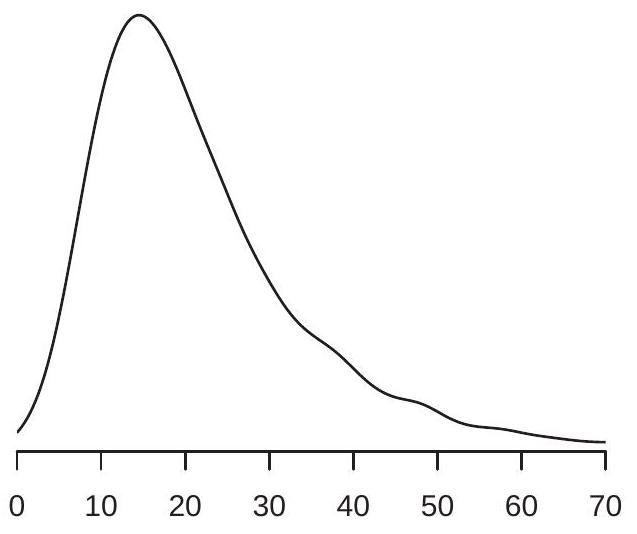
- 工资密度
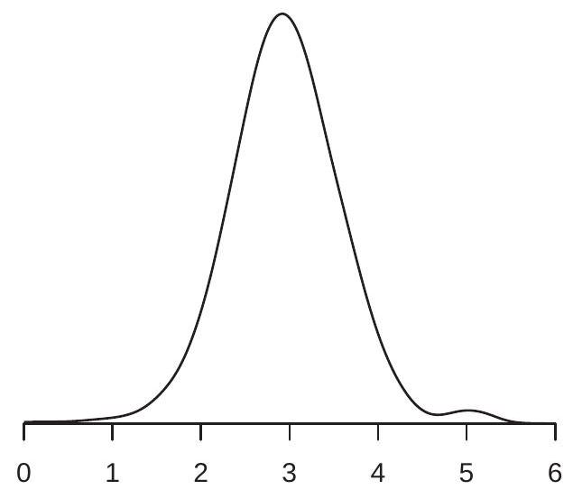
- 对数工资密度
图 2.1：工资密度和对数工资
在图 2.1(a) 中，我们展示了 \(2009 .\) 中美国工资率概率密度函数的估计 \({ }^{1}\) 我们看到密度在 \(\$ 15\), and most of the probability mass appears to lie between \(\$ 10\) 和 \(\$ 40 附近达到峰值\). These are ranges for typical wage rates in the U.S. population.
集中趋势的重要度量是中位数和平均值。连续分布 \(F\) 的中位数 \(m\) 是
\[ F(m)=\frac{1}{2} . \]
美国工资中位数为 \(\$ 19.23\). The median is a robust \({ }^{2}\) measure of central tendency, but it is tricky to use for many calculations as it is not a linear operator.
具有离散支持的随机变量 \(Y\) 的均值或期望是
\[ \mu=\mathbb{E}[Y]=\sum_{j=1}^{\infty} \tau_{j} \mathbb{P}\left[Y=\tau_{j}\right] . \]
对于密度为 \(f(y)\) 的连续随机变量，期望为
\[ \mu=\mathbb{E}[Y]=\int_{-\infty}^{\infty} y f(y) d y . \]
在这里，我们使用了使用单个字符 \(Y\) 来表示随机变量的常见且方便的约定，而不是更繁琐的标签工资。包含离散和连续随机变量作为特殊情况的另一种表示法是将积分写为 \(\int_{-\infty}^{\infty} y d F(y)\)。
期望是集中趋势的一种方便度量，因为它是一个线性算子，并且在许多经济模型中自然出现。期望的一个缺点是它不是健壮的 \({ }^{3}\) 尤其是
\({ }^{1}\) 分布和密度是根据 2009 年 3 月当前人口调查中报告的 50,742 名全职非军事工薪者样本非参数估计的。工资率由个人年度工资和薪金收入除以工作时间构成。
\({ }^{2}\) 中位数对分布尾部的扰动不敏感。
\({ }^{3}\) 期望对分布尾部的扰动很敏感。如图 2.1(a) 所示，存在明显偏斜或厚尾，这两者都是工资分布的特征。另一种看法是，\(64 %\) 工人的平均工资低于 \(\$ 23.90\), suggesting that it is incorrect to describe the mean \(\$ 23.90\) 作为“典型”工资率。
在这种情况下，通过取自然对数“\({ }^{4}\)”来转换数据是有用的。图 \(2.1\) (b) 显示了相同人口的 \(\log\) 小时工资 \(\log (\) 工资 \()\) 的密度。密度对数工资的偏斜和肥尾比工资水平的密度要小，所以它的均值
\[ \mathbb{E}[\log (\text { wage })]=2.95 \]
是分布集中趋势的更好（更稳健）的度量 \({ }^{5}\)。出于这个原因，工资回归通常使用对数工资作为因变量，而不是工资水平。
总结概率分布 \(F(y)\) 的另一种有用方法是根据其分位数。对于任何 \(\alpha \in(0,1)\)，连续 \({ }^{6}\) 分布 \(F\) 的 \(\alpha^{t h}\) 分位数是满足 \(F\left(q_{\alpha}\right)=\alpha\) 的实数 \(q_{\alpha}\)。分位数函数 \(q_{\alpha}\)，被视为 \(\alpha\) 的函数，是分布函数 \(F\) 的倒数。最常用的分位数是中位数，即\(q_{0.5}=m\)。我们有时通过 \(\alpha\) 的百分位数表示来指代分位数，在这种情况下，它们被称为百分位数。例如。中位数是 \(50^{t h}\) 百分位数。
有条件的期望
我们在图 2.1(b) 中看到了对数工资的密度。这种分布对所有工人来说都是一样的，还是工资分布在不同的子人群中有所不同？为了回答这个问题，我们可以比较不同群体的工资分布——例如，男性和女性。为了进行调查，我们在图 \(2.2\) (a) 中绘制了美国男性和女性的对数工资密度。我们可以看到这两种工资密度具有相似的形状，但男性的密度稍微向右移动。
值 \(3.05\) 和 \(2.81\) 是男性和女性工人亚群的平均对数工资。它们被称为给定性别的对数工资的条件期望（或条件均值）。我们可以将它们的具体值写为
\[ \begin{gathered} \mathbb{E}[\log (\text { wage }) \mid \text { gender }=\text { man }]=3.05 \\ \mathbb{E}[\log (\text { wage }) \mid \text { gender }=\text { woman }]=2.81 . \end{gathered} \]
我们将这些期望称为“有条件的”，因为它们以可变性别的固定值为条件。虽然您可能不会将一个人的性别视为随机变量，但从计量经济学分析的角度来看，它是随机的。如果你随机选择一个人，这个人的性别是未知的，因此是随机的。 （在美国工人群体中，工人是女性的概率恰好是 \(43 %\)。）在观察数据中，将所有测量值视为随机变量是最合适的，然后子群体的平均值就是条件平均值。
在这一点上重要的是要提到，我们绝不会将因果关系或解释归因于男女之间对数工资的条件期望差异。有多种可能的解释。
由于图 2.2(a) 中的两个密度看起来相似，因此可以草率地推断男性和女性的工资分布之间没有有意义的差异。在得出这个结论之前，让我们更仔细地检查分布的差异。正如我们上面提到的，
\({ }^{4}\) 在整本书中，我们将使用 \(\log (y)\) 或 \(\log y\) 来表示 \(y\) 的自然对数。
\({ }^{5}\) 更准确地说，几何平均值 \(\exp (\mathbb{E}[\log W])=\$ 19.11\) is a robust measure of central tendency.
\({ }^{6}\) 如果 \(F\) 不连续，则定义为 \(q_{\alpha}=\inf \{y: F(y) \geq \alpha\}\)
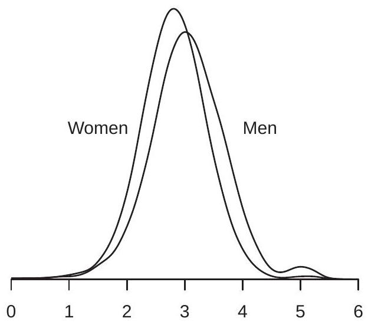
- 妇女和男子
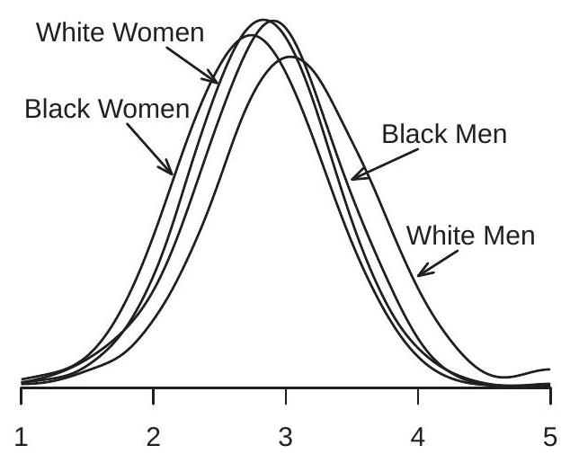
- 按性别和种族
图 2.2：按性别和种族划分的对数工资密度
两种密度之间的主要区别似乎是它们的平均值。这个差等于
\[ \begin{aligned} \mathbb{E}[\log (\text { wage }) \mid \text { gender }=\text { man }]-\mathbb{E}[\log (\text { wage }) \mid \text { gender }=\text { woman }] &=3.05-2.81 \\ &=0.24 . \end{aligned} \]
\(0.24\) 的预期对数工资差异通常被解释为男性和女性工资之间的平均 \(24 %\) 差异，这是相当大的。 （有关更完整的解释，请参见第 2.4 节。）
考虑进一步按种族划分男性和女性亚群，将人口分为白人、黑人和其他种族。我们在图 \(2.2\) (b) 中显示了其中四个组的对数工资密度函数。我们再次看到四个密度函数之间的主要区别在于它们的集中趋势。
关注这些分布的均值，表 \(2.1\) 报告了六个子群体中每一个的平均对数工资。
表 2.1：按性别和种族划分的平均对数工资
| men | women | |
|---|---|---|
| white | \(3.07\) | \(2.82\) |
| Black | \(2.86\) | \(2.73\) |
| other | \(3.03\) | \(2.86\) |
我们再次强调，我们绝不会将因果关系或解释归因于表格条目之间的差异。我们之所以使用这些特定的亚群来说明条件期望，是因为美国（和其他地方）性别和种族群体之间的经济结果差异已被广泛讨论；社会科学的部分作用是仔细记录这些模式，其部分作用是制作模型和解释。有条件的期望（自己）可以帮助文档和描述；条件期望本身既不是模型也不是解释。
表 \(2.1\) 中的条目是给定性别和种族的 \(\log (\) 工资 \()\) 的条件均值。例如
\[ \mathbb{E}[\log (\text { wage }) \mid \text { gender }=\text { man, race }=\text { white }]=3.07 \]
和
\[ \mathbb{E}[\log (\text { wage }) \mid \text { gender }=\text { woman, race }=\text { Black }]=2.73 \text {. } \]
关注条件均值的一个好处是它们可以将复杂的分布简化为单一的汇总度量，从而促进跨组的比较。由于这种简化特性，条件均值是回归分析的主要兴趣点，也是计量经济学的主要关注点。
表 \(2.1\) 使我们能够轻松计算各组之间的平均工资差异。例如，我们可以看到男女之间的工资差距在按种族分类后继续存在，因为白人男性和白人女性之间的平均差距是 \(25 %\)，而黑人男性和黑人女性之间的平均差距是 \(13 %\)。我们还可以看到存在种族差距，因为黑人的平均工资大大低于其他种族类别。特别是，白人男性和黑人男性之间的平均工资差距是 \(21 %\)，白人女性和黑人女性之间的平均工资差距是 \(9 %\)。
日志和百分比
在本节中，我们希望通过两个观察来激发和阐明回归分析中对数的使用。首先，当应用于数字时，对数的差异大约等于百分比差异。其次，当应用于平均值时，对数差异大约等于几何平均值的百分比差异。我们现在解释这些想法和所涉及的近似值的性质。
取两个正数 \(a\) 和 \(b\)。 \(a\) 和 \(b\) 之间的百分比差异是
\[ p=100\left(\frac{a-b}{b}\right) . \]
重写，
\[ \frac{a}{b}=1+\frac{p}{100} \]
取自然对数，
\[ \log a-\log b=\log \left(1+\frac{p}{100}\right) . \]
小 \(x\) 的有用近似值是
\[ \log (1+x) \simeq x . \]
这可以从 \(\log (1+x)\) 的无限级数展开推导出来：
\[ \log (1+x)=x-\frac{x^{2}}{2}+\frac{x^{3}}{3}-\frac{x^{4}}{4}+\cdots=x+O\left(x^{2}\right) . \]
符号 \(O\left(x^{2}\right.\) ) 表示余数以 \(A x^{2}\) 为界，对于某些 \(A<\infty\)，则为 \(x \rightarrow 0\)。在数值上，对于 \(|x| \leq 0.1\)，近似值 \(\log (1+x) \simeq x\) 在 \(0.001\) 之内，并且近似误差随着 \(|x|\) 的增加而增加
将 (2.3) 应用于 (2.2) 并乘以 100，我们发现
\[ p \simeq 100(\log a)-\log b) . \]
这表明 100 乘以对数差值大约是百分比差值。在数值上，\(|p| \leq 10\) 的近似误差小于 \(0.1\) 个百分点。
现在考虑对数转换随机变量的期望差异。取两个随机变量 \(X_{1}, X_{2}>0\)。定义它们的几何平均值 \(\theta_{1}=\exp \left(\mathbb{E}\left[\log X_{1}\right]\right)\) 和 \(\theta_{2}=\exp \left(\mathbb{E}\left[\log X_{2}\right]\right)\) 以及它们的百分比差异
\[ p=100\left(\frac{\theta_{2}-\theta_{1}}{\theta_{1}}\right) . \]
对数变换的期望差异（乘以 100）为
\[ 100\left(\mathbb{E}\left[\log X_{2}\right]-\mathbb{E}\left[\log X_{1}\right]\right)=100\left(\log \theta_{2}-\log \theta_{1}\right) \simeq p \]
\(\theta_{2}\) 和 \(\theta_{1}\) 之间的百分比差异。换句话说，对数变换变量的平均值之间的差异（大约）是几何平均值的百分比差异。
后一种观察之所以重要，是因为许多计量经济学方程采用半对数形式
\[ \begin{aligned} &\mathbb{E}[\log Y \mid \operatorname{group}=1]=\mu_{1} \\ &\mathbb{E}[\log Y \mid \operatorname{group}=2]=\mu_{2} \end{aligned} \]
并且相当注意差异\(\mu_{1}-\mu_{2}\)。例如，在上一节中，我们比较了男性和女性的平均对数工资，发现差异为 \(0.24\)。在该部分中，我们指出这种差异通常被解释为平均百分比差异。这并不完全正确，但也不是完全错误。上面的计算表明，这个差异大约是几何平均值的百分比差异。所以 \(\mu_{1}-\mu_{2}\) 是平均百分比差异，其中“平均”是指几何平均值而不是算术平均值。
要比较不同的百分比差异度量，请参见表 2.2。在前两列中，我们使用四个“平均值”报告 CPS 人群中男性和女性的平均工资：算术平均值、中位数、几何平均值和对数平均值。两组的算术平均值均高于中位数和几何平均值，后两者相似。这是偏态分布（例如工资分布）的共同特征。第三列报告前两列之间的百分比差异（以男性工资为基数）。例如，\(34 %\) 的第一个条目表明男性的平均工资比女性的平均工资高 \(34 %\)。下一个条目显示男性的中位数和几何平均值比女性高 \(26 %\)。此列中的最后一项是平均对数工资之间的简单差值的 100 倍，即 \(24 %\)。如上所示，对数变换均值的差异近似为几何均值的百分比差异，这种近似对于 \(10 %\) 以下的差异非常有用。
让我们总结一下这个分析。通常取变量的对数并在条件均值之间进行比较。我们已经表明，这些差异是几何平均值百分比差异的度量。因此，预期对数转换之间的差异（例如男性和女性工资之间的 \(0.24\) 差异）是近似百分比差异（例如男性工资相对于女性工资的 24% 差异）的常见描述是正确的，只要当我们意识到我们隐含地比较几何平均值时。
条件期望函数
工资的一个重要决定因素是教育。在许多实证研究中，经济学家通过受教育年数 \({ }^{7}\) 来衡量教育程度。我们将把这个变量写成教育。
\({ }^{7}\) 在这里，教育被定义为幼儿园之后的教育年限。高中毕业生的教育=12，大学毕业生的教育=16，硕士学位的教育=18，专业学位（医学、法律或博士）的教育= 表2.2：平均工资和百分比差异
| men | women | % Difference | |
|---|---|---|---|
| Arithmetic Mean | \(\$ 26.80\) | \(\$ 20.00\) | \(34 %\) |
| Median | \(\$ 21.14\) | \(\$ 16.83\) | \(26 %\) |
| Geometric Mean | \(\$ 21.03\) | \(\$ 16.64\) | \(26 %\) |
| Mean log Wage | \(3.05\) | \(2.81\) | \(24 %\) |
在给定性别、种族和教育的情况下，\(\log (\) 工资 \()\) 的条件期望是每个类别的单个数字。例如
\[ \mathbb{E}[\log (\text { wage }) \mid \text { gender }=\text { man, race }=\text { white, education }=12]=2.84 . \]
我们在图 \(2.3\) 中显示了 \(\log\)（工资）作为教育函数的条件期望，分别针对（白人）男性和女性。剧情相当有内涵。我们看到，有条件的期望在受教育年限中增加，但在九年以上和以下的学校教育水平上以不同的速度增长。图 \(2.3\) 的另一个显着特点是男女之间的差距在所有教育水平上大致保持不变。由于变量是用对数来衡量的，这意味着无论受教育程度如何，男性和女性之间的平均百分比差距都是恒定的。
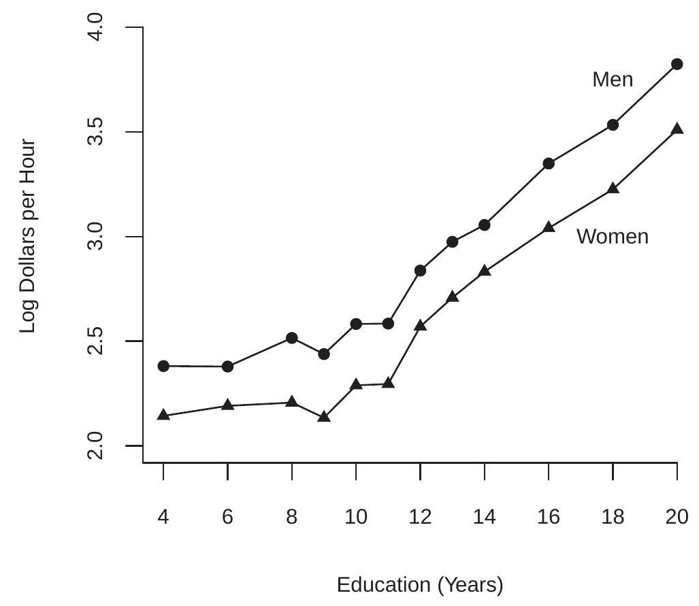
图 2.3：预期对数工资与教育 tion=20 的函数关系。在许多情况下，通过使用单个字符（通常是 \(Y, X\) 和/或 \(Z\)）编写变量来简化符号是很方便的。计量经济学习惯用字母 \(Y\) 表示因变量（例如 \(\log (\) 工资 \()\) ），用字母 \(X\) 表示条件变量（例如性别），以及多个条件变量（例如种族，教育和性别）由下标字母 \(X_{1}, X_{2}, \ldots, X_{k}\)。
条件期望可以用通用符号来写
\[ \mathbb{E}\left[Y \mid X_{1}=x_{1}, X_{2}=x_{2}, \ldots, X_{k}=x_{k}\right]=m\left(x_{1}, x_{2}, \ldots, x_{k}\right) \text {. } \]
我们称之为条件期望函数（CEF）。 CEF 是 \(\left(x_{1}, x_{2}, \ldots, x_{k}\right)\) 的函数，因为它随变量而变化。例如，\(Y=\log (\) 工资 \()\) 给定 \(\left(X_{1}, X_{2}\right)=(g e n d e r\),race) 的条件期望由表 \(2.1 .\) 的六个条目给出
为了更紧凑，我们通常将条件变量写为 \(\mathbb{R}^{k}\) 中的向量：
\[ X=\left(\begin{array}{c} X_{1} \\ X_{2} \\ \vdots \\ X_{k} \end{array}\right) \]
给定这个符号，CEF 可以紧凑地写为
\[ \mathbb{E}[Y \mid X=x]=m(x) . \]
CEF \(m(x)=\mathbb{E}[Y \mid X=x]\) 是 \(x \in \mathbb{R}^{k}\) 的函数。它说：“当 \(X\) 取 \(x\) 的值时，\(Y\) 的平均值是 \(m(x)\)。”有时将 CEF 视为随机变量 \(X\) 的函数很有用。在这种情况下，我们在 \(X\) 处评估函数 \(m(x)\)，并写成 \(m(X)\) 或 \(\mathbb{E}[Y \mid X]\)。这是随机的，因为它是随机变量 \(X\) 的函数。
连续变量
在前面的部分中，我们隐含地假设条件变量是离散的。然而，许多条件变量是连续的。在本节中，我们将采用这种情况并假设变量 \((Y, X)\) 以联合密度函数 \(f(y, x)\) 连续分布。
以 \(Y=\log (\) 工资 \()\) 和 \(X=\) 经验为例，后者是潜在劳动力市场经验的年数 \({ }^{8}\)。对于受过 12 年教育的白人男性人口，他们的联合密度等值线绘制在图 \(2.4\) (a) 中。
给定联合密度 \(f(y, x)\) 变量 \(x\) 具有边际密度
\[ f_{X}(x)=\int_{-\infty}^{\infty} f(y, x) d y . \]
对于任何 \(x\) 使得 \(f_{X}(x)>0\) 给定 \(X\) 的 \(Y\) 的条件密度定义为
\[ f_{Y \mid X}(y \mid x)=\frac{f(y, x)}{f_{X}(x)} . \]
条件密度是保持 \(x\) 固定的联合密度 \(f(y, x)\) 的重新归一化切片。切片被重新归一化（除以 \(f_{X}(x)\) 以便积分为一），因此是一个密度。我们可以通过在与 \(y\) 轴平行的特定值 \(x\) 处切片联合密度函数来可视化这一点。例如，取图 2.4(a) 中的密度等值线，并在特定的经验值处切开等值线图，并且
\({ }^{8}\) 由于没有直接衡量经验，我们将经验定义为 age-education-6
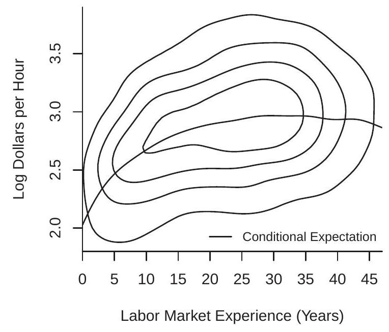
- 对数工资和经验的联合密度
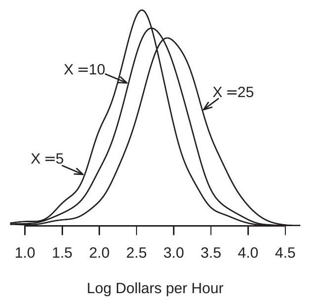
- 给定经验的对数工资的条件密度
图 2.4：日志工资和经验
然后重新归一化切片，使其具有适当的密度。这为我们提供了具有 12 年教育和这种经验水平的白人男性对数（工资）的条件密度。我们对三个级别的经验 \((5,10\) 和 25 年执行此操作，并将这些密度绘制在图 \(2.4\) (b) 中。我们可以看到，随着经验的增加，工资分布向右移动并变得更加分散。
给定 \(X=x\) 的 \(Y\) 的 CEF 是条件密度 (2.5) 的期望
\[ m(x)=\mathbb{E}[Y \mid X=x]=\int_{-\infty}^{\infty} y f_{Y \mid X}(y \mid x) d y . \]
直观地说，\(m(x)\) 是条件变量固定在 \(x\) 的理想化子群体的 \(Y\) 的期望值。当 \(X\) 连续分布时，这个子群体无限小。
当条件密度（2.5）定义明确时，这个定义（2.6）是合适的。然而，\(2.31\) 部分中的定理 \(2.13\) 将表明 \(m(x)\) 可以定义为任何随机变量 \((Y, X)\)，只要 \(\mathbb{E}|Y|<\infty\)
在图 2.4(a) 中，给定经验的 \(\log\)（工资）的 CEF 绘制为实线。我们可以看到 CEF 是一个平滑但非线性的函数。 CEF 最初在经验上增加，在经验 \(=30\) 附近趋于平缓，然后随着经验水平的提高而降低。
迭代期望定律
概率论中一个非常有用的工具是迭代期望定律。一个重要的特殊情况被称为简单定律。定理 2.1 迭代期望的简单定律
如果 \(\mathbb{E}|Y|<\infty\) 那么对于任何随机向量 \(X\)，
\[ \mathbb{E}[\mathbb{E}[Y \mid X]]=\mathbb{E}[Y] . \]
这表明有条件期望的期望是无条件期望。换句话说，条件平均值的平均值是无条件平均值。对于离散 \(X\)
\[ \mathbb{E}[\mathbb{E}[Y \mid X]]=\sum_{j=1}^{\infty} \mathbb{E}\left[Y \mid X=x_{j}\right] \mathbb{P}\left[X=x_{j}\right] . \]
对于连续 \(X\)
\[ \mathbb{E}[\mathbb{E}[Y \mid X]]=\int_{\mathbb{R}^{k}} \mathbb{E}[Y \mid X=x] f_{X}(x) d x . \]
回到我们对男性和女性平均原木工资的调查，简单的法律规定：
\[ \begin{aligned} &\mathbb{E}[\log (\text { wage }) \mid \text { gender }=\text { man }] \mathbb{P}[\text { gender }=\text { man }] \\ &+\mathbb{E}[\log (\text { wage }) \mid \text { gender }=\text { woman }] \mathbb{P}[\text { gender }=\text { woman }] \\ &=\mathbb{E}[\log (\text { wage })] \end{aligned} \]
或者在数字上，
\[ 3.05 \times 0.57+2.81 \times 0.43=2.95 \text {. } \]
迭代期望的一般规律允许两组条件变量。
定理 2.2 迭代期望定律 如果 \(\mathbb{E}|Y|<\infty\) 那么对于任何随机向量 \(X_{1}\) 和 \(X_{2}\)，
\[ \mathbb{E}\left[\mathbb{E}\left[Y \mid X_{1}, X_{2}\right] \mid X_{1}\right]=\mathbb{E}\left[Y \mid X_{1}\right] . \]
注意法律的适用方式。 \(X_{1}\) 和 \(X_{2}\) 上的内部期望条件，而外部期望仅在 \(X_{1}\) 上条件。迭代的期望产生简单的答案 \(\mathbb{E}\left[Y \mid X_{1}\right]\)，期望仅以 \(X_{1}\) 为条件。有时我们将其表述为：“较小的信息集获胜。”
举个例子
\[ \begin{aligned} &\mathbb{E}[\log (\text { wage }) \mid \text { gender }=\text { man, race }=\text { white }] \mathbb{P}[\text { race }=\text { white } \mid \text { gender }=\text { man }] \\ &+\mathbb{E}[\log (\text { wage }) \mid \text { gender }=\text { man, race }=\text { Black }] \mathbb{P}[\text { race }=\text { Black } \mid \text { gender }=\text { man }] \\ &+\mathbb{E}[\log (\text { wage }) \mid \text { gender }=\text { man, race }=\text { other }] \mathbb{P}[\text { race }=\text { other } \mid \text { gender }=\text { man }] \\ &=\mathbb{E}[\log (\text { wage }) \mid \text { gender }=\text { man }] \end{aligned} \]
或数字上
\[ 3.07 \times 0.84+2.86 \times 0.08+3.03 \times 0.08=3.05 \text {. } \]
条件期望的一个属性是，当您以随机向量 \(X\) 为条件时，您可以有效地将其视为常数。例如，对于任何函数 \(g(\cdot)\)，\(\mathbb{E}[X \mid X]=X\) 和 \(\mathbb{E}[g(X) \mid X]=g(X)\)。一般性质称为条件定理。
定理 2.3 条件定理 如果 \(\mathbb{E}|Y|<\infty\) 那么
\[ \mathbb{E}[g(X) Y \mid X]=g(X) \mathbb{E}[Y \mid X] . \]
如果另外 \(\mathbb{E}|g(X)|<\infty\) 那么
\[ \mathbb{E}[g(X) Y]=\mathbb{E}[g(X) \mathbb{E}[Y \mid X]] . \]
定理 2.1、\(2.2\) 和 \(2.3\) 的证明在 \(2.33 .\) 部分给出
CEF 错误
CEF 错误 \(e\) 定义为 \(Y\) 与在 \(X\) 评估的 CEF 之间的差异：
\[ e=Y-m(X) . \]
通过构造，这产生了公式
\[ Y=m(X)+e . \]
在 (2.9) 中，理解误差 \(e\) 是从 \((Y, X)\) 的联合分布导出的，因此它的性质是从这个构造导出的，这很有用。
许多计量经济学作者使用希腊字母 \(\varepsilon\) 来表示 CEF 错误。我不遵循这个约定，因为错误 \(e\) 是一个类似于 \(Y\) 和 \(X\) 的随机变量，并且通常使用拉丁字符作为随机变量。
CEF 错误的一个关键特性是它的条件期望为零。要看到这一点，通过期望的线性、\(m(X)=\mathbb{E}[Y \mid X]\) 的定义和条件定理
\[ \begin{aligned} \mathbb{E}[e \mid X] &=\mathbb{E}[(Y-m(X)) \mid X] \\ &=\mathbb{E}[Y \mid X]-\mathbb{E}[m(X) \mid X] \\ &=m(X)-m(X)=0 . \end{aligned} \]
这个事实可以结合迭代期望定律来证明无条件期望也是零。
\[ \mathbb{E}[e]=\mathbb{E}[\mathbb{E}[e \mid X]]=\mathbb{E}[0]=0 . \]
我们正式陈述这一点和其他一些结果。
定理 2.4 CEF 误差的性质
如果 \(\mathbb{E}|Y|<\infty\) 那么
\(\mathbb{E}[e \mid X]=0\)。
\(\mathbb{E}[e]=0\)。
如果 \(\mathbb{E}|Y|^{r}<\infty\) 对应 \(r \geq 1\) 那么 \(\mathbb{E}|e|^{r}<\infty\)。
对于任何函数 \(h(x)\) 使得 \(\mathbb{E}|h(X) e|<\infty\) 然后 \(\mathbb{E}[h(X) e]=0\)。第三个结果的证明推迟到 2.33 节。第四个结果的证明留给练习 2.3，这意味着 \(e\) 与回归量的任何函数都不相关。
方程
\[ \begin{aligned} Y &=m(X)+e \\ \mathbb{E}[e \mid X] &=0 \end{aligned} \]
一起暗示 \(m(X)\) 是给定 \(X\) 的 \(Y\) 的 CEF。重要的是要了解这不是限制。根据定义，这些等式成立。
条件 \(\mathbb{E}[e \mid X]=0\) 被 \(e\) 的定义隐含为 \(Y\) 和 CEF \(m(X)\) 之间的差。方程 \(\mathbb{E}[e \mid X]=0\) 有时称为条件均值限制，因为误差 \(e\) 的条件均值被限制为零。该属性有时也称为平均独立性，因为 \(e\) 的条件平均值为 0，因此独立于 \(X\)。但是，这并不意味着 \(e\) 的分布独立于 \(X\)。有时添加假设“\(e\) 独立于 \(X\)”是为了方便简化，但它不是条件均值的通用特征。通常，即使 \(e\) 的条件均值为零，\(e\) 和 \(X\) 也是共同依赖的。
例如，对于与图 2.4 相同的总体，回归误差 \(e\) 和经验的联合密度等值线绘制在图 \(2.5\) 中。请注意，条件分布的形状随经验水平而变化。
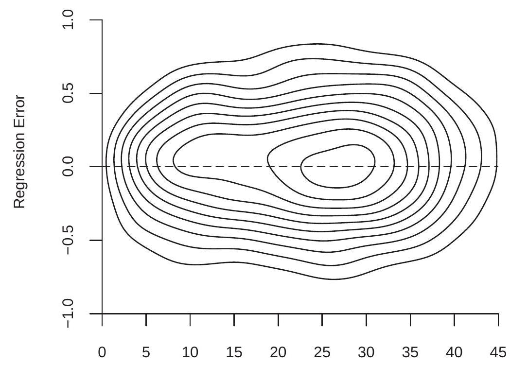
劳动力市场经验（年）
图 2.5：回归误差和经验的联合密度
作为一个简单的例子，其中 \(X\) 和 \(e\) 均值独立但相互依赖，让 \(e=X u\) 其中 \(X\) 和 \(u\) 是独立的 \(\mathrm{N}(0,1)\)。然后以 \(X\) 为条件，错误 \(e\) 具有分布 \(\mathrm{N}\left(0, X^{2}\right)\)。因此 \(\mathbb{E}[e \mid X]=0\) 和 \(e\) 均值独立于 \(X\)，但 \(e\) 并不完全独立于 \(X\)。平均独立并不意味着完全独立。
仅拦截模型
回归模型的一个特例是没有回归变量 \(X\)。在这种情况下 \(m(X)=\mathbb{E}[Y]=\mu\)，\(Y\) 的无条件期望。我们仍然可以为 \(Y\) 写出回归格式的方程：
\[ \begin{aligned} Y &=\mu+e \\ \mathbb{E}[e] &=0 . \end{aligned} \]
这对于统一符号很有用。
回归方差
CEF 函数离散度的一个重要度量是 CEF 误差 \(e\) 的无条件方差。我们把它写成
\[ \sigma^{2}=\operatorname{var}[e]=\mathbb{E}\left[(e-\mathbb{E}[e])^{2}\right]=\mathbb{E}\left[e^{2}\right] . \]
定理 2.4.3 暗示了以下简单但有用的结果。
定理 2.5 如果 \(\mathbb{E}\left[Y^{2}\right]<\infty\) 则 \(\sigma^{2}<\infty\)。
我们可以将 \(\sigma^{2}\) 称为回归方差或回归误差的方差。 \(\sigma^{2}\) 的大小衡量 \(Y\) 中的变化量，这在条件期望 \(\mathbb{E}[Y \mid X]\) 中没有“解释”或解释。
回归方差取决于回归量 \(X\)。考虑两个回归
\[ \begin{aligned} &Y=\mathbb{E}\left[Y \mid X_{1}\right]+e_{1} \\ &Y=\mathbb{E}\left[Y \mid X_{1}, X_{2}\right]+e_{2} . \end{aligned} \]
我们将这两个错误清楚地写为 \(e_{1}\) 和 \(e_{2}\)，因为它们是不同的——改变条件信息会改变条件期望，因此也会改变回归误差。
在我们对迭代期望的讨论中，我们已经看到，通过增加条件集，条件期望揭示了关于 \(Y\) 分布的更多细节。回归误差的含义是什么？
事实证明，有一个简单的关系。我们可以将条件期望 \(\mathbb{E}[Y \mid X]\) 视为 \(Y\) 的“解释部分”。剩余的 \(e=Y-\mathbb{E}[Y \mid X]\) 是“无法解释的部分”。我们现在推导出的简单关系表明，当我们以更多变量为条件时，这个无法解释的部分的方差会减小。这种关系是单调的，因为增加信息量总是会降低无法解释部分的方差。
定理 2.6 如果 \(\mathbb{E}\left[Y^{2}\right]<\infty\) 那么
\[ \operatorname{var}[Y] \geq \operatorname{var}\left[Y-\mathbb{E}\left[Y \mid X_{1}\right]\right] \geq \operatorname{var}\left[Y-\mathbb{E}\left[Y \mid X_{1}, X_{2}\right]\right] . \]
定理 \(2.6\) 表示，每当向条件信息中添加一个附加变量时，\(Y\) 与其条件期望之间的差异方差（弱）就会减小。
定理 \(2.6\) 的证明在 2.33 节给出。
最佳预测者
假设给定一个随机向量 \(X\)，我们想要预测或预测 \(Y\)。我们可以将任何预测器写成 \(X\) 的函数 \(g(X)\)。 （事后）预测误差是实现的差异 \(Y-g(X)\)。预测误差大小的非随机度量是其平方的期望
\[ \mathbb{E}\left[(Y-g(X))^{2}\right] . \]
我们可以将最佳预测器定义为最小化 (2.10) 的函数 \(g(X)\)。什么函数是最好的预测器？事实证明，答案是 CEF \(m(X)\)。无论 \((Y, X)\) 的联合分布如何，这都成立。
要看到这一点，请注意预测变量 \(g(X)\) 的均方误差是
\[ \begin{aligned} \mathbb{E}\left[(Y-g(X))^{2}\right] &=\mathbb{E}\left[(e+m(X)-g(X))^{2}\right] \\ &=\mathbb{E}\left[e^{2}\right]+2 \mathbb{E}[e(m(X)-g(X))]+\mathbb{E}\left[(m(X)-g(X))^{2}\right] \\ &=\mathbb{E}\left[e^{2}\right]+\mathbb{E}\left[(m(X)-g(X))^{2}\right] \\ & \geq \mathbb{E}\left[e^{2}\right] \\ &=\mathbb{E}\left[(Y-m(X))^{2}\right] . \end{aligned} \]
第一个等式进行替换 \(Y=m(X)+e\)，第三个等式使用定理 2.4.4。通过设置 \(g(X)=m(X)\) 最小化第三个等式后的右手边，产生第四行的不等式。如定理 \(2.5\) 所示，在假设 \(\mathbb{E}\left[Y^{2}\right]<\infty\) 下最小值是有限的。
我们在下面的结果中正式说明了这一点。
定理 2.7 条件期望作为最佳预测器 如果 \(\mathbb{E}\left[Y^{2}\right]<\infty\)，那么对于任何预测器 \(g(X)\)，
\[ \mathbb{E}\left[(Y-g(X))^{2}\right] \geq \mathbb{E}\left[(Y-m(X))^{2}\right] \]
\(m(X)=\mathbb{E}[Y \mid X]\)
在仅截取模型的上下文中考虑此结果可能会有所帮助
\[ \begin{aligned} Y &=\mu+e \\ \mathbb{E}[e] &=0 . \end{aligned} \]
定理 \(2.7\) 表明，\(Y\)（在常量类中）的最佳预测器是无条件均值 \(\mu=\mathbb{E}[Y]\)，因为均值使均方预测误差最小化。
条件方差
虽然条件均值可以很好地衡量条件分布的位置，但它不能提供有关分布分布的信息。分散度的常用度量是条件方差。我们首先给出随机变量 \(Y\) 的条件方差的一般定义。
定义2.1 如果\(\mathbb{E}\left[Y^{2}\right]<\infty\)，给定\(X=x\)，\(Y\)的条件方差为
\[ \sigma^{2}(x)=\operatorname{var}[Y \mid X=x]=\mathbb{E}\left[(Y-\mathbb{E}[Y \mid X=x])^{2} \mid X=x\right] . \]
被视为随机变量的条件方差是 \(\operatorname{var}[Y \mid X]=\sigma^{2}(X)\)。
条件方差不同于无条件方差 var \([Y]\)。不同之处在于条件方差是条件变量的函数。请注意，条件方差是条件二阶矩，以条件一阶矩为中心。
给定这个定义，我们定义回归误差的条件方差。
定义 2.2 如果 \(\mathbb{E}\left[e^{2}\right]<\infty\)，则给定 \(X=x\) 的回归误差 \(e\) 的条件方差为
\[ \sigma^{2}(x)=\operatorname{var}[e \mid X=x]=\mathbb{E}\left[e^{2} \mid X=x\right] . \]
\(e\) 被视为随机变量的条件方差是 \(\operatorname{var}[e \mid X]=\sigma^{2}(X)\)。
同样，条件方差 \(\sigma^{2}(x)\) 与无条件方差 \(\sigma^{2}\) 不同。条件方差是回归量的函数，无条件方差不是。通常，\(\sigma^{2}(x)\) 是 \(x\) 的一个非平凡函数，并且可以采用任何形式，但必须限制它为非负数。考虑 \(\sigma^{2}(x)\) 的一种方法是，它是给定 \(X\) 的 \(e^{2}\) 的条件均值。还要注意 \(\sigma^{2}(x)=\operatorname{var}[Y \mid X=x]\) 所以它等效地是因变量的条件方差。
\(Y\) 的方差与 \(Y\) 的度量单位不同。为了将方差转换为相同的度量单位，我们将条件标准差定义为其平方根 \(\sigma(x)=\sqrt{\sigma^{2}(x)}\)。
作为条件方差如何依赖于可观察值的示例，比较图 2.2 中显示的男性和女性的条件对数工资密度。密度之间的差异不仅是位置偏移，而且也是传播差异。具体来说，我们可以看到男性的对数工资密度比女性的分布更分散，而女性的工资密度则更峰值。事实上，男性工资的条件标准差是 \(3.05\)，女性工资的条件标准差是 \(2.81\)。因此，虽然男性的平均工资较高，但他们也更加分散。
无条件方差通过以下恒等式与条件方差相关。
定理 2.8 如果 \(\mathbb{E}\left[Y^{2}\right]<\infty\) 那么
\[ \operatorname{var}[Y]=\mathbb{E}[\operatorname{var}[Y \mid X]]+\operatorname{var}[\mathbb{E}[Y \mid X]] . \]
参见经济学家的概率和统计定理 \(4.14\)。定理 \(2.8\) 将无条件方差分解为有时称为“组内方差”和“组间方差”的变量。例如，如果 \(X\) 是教育水平，那么第一项是教育水平的条件期望的期望方差。第二项是控制教育后的方差。
回归误差的条件均值为零，因此它的无条件误差方差等于期望的条件方差，或者等效地可以通过迭代期望定律找到。
\[ \sigma^{2}=\mathbb{E}\left[e^{2}\right]=\mathbb{E}\left[\mathbb{E}\left[e^{2} \mid X\right]\right]=\mathbb{E}\left[\sigma^{2}(X)\right] . \]
也就是说，无条件误差方差是平均条件方差。
给定条件方差，我们可以定义重新调整的误差
\[ u=\frac{e}{\sigma(X)} \text {. } \]
我们计算出，因为 \(\sigma(X)\) 是 \(X\) 的函数
\[ \mathbb{E}[u \mid X]=\mathbb{E}\left[\frac{e}{\sigma(X)} \mid X\right]=\frac{1}{\sigma(X)} \mathbb{E}[e \mid X]=0 \]
和
\[ \operatorname{var}[u \mid X]=\mathbb{E}\left[u^{2} \mid X\right]=\mathbb{E}\left[\frac{e^{2}}{\sigma^{2}(X)} \mid X\right]=\frac{1}{\sigma^{2}(X)} \mathbb{E}\left[e^{2} \mid X\right]=\frac{\sigma^{2}(X)}{\sigma^{2}(X)}=1 . \]
因此 \(u\) 的条件期望为零，条件方差为 1。
注意 (2.11) 可以重写为
\[ e=\sigma(X) u . \]
并将其替换为 CEF 方程 (2.9) 中的 \(e\)，我们发现
\[ Y=m(X)+\sigma(X) u . \]
这是 CEF 方程的另一种（均值方差）表示。
许多计量经济学研究侧重于条件期望 \(m(x)\)，要么忽略条件方差 \(\sigma^{2}(x)\)，将其视为常数 \(\sigma^{2}(x)=\sigma^{2}\)，要么将其视为令人讨厌的参数（不是主要关注的参数）。当条件分布的主要变化处于均值时，这是合适的，但在其他情况下可能是短视的。分散与许多经济主题相关，包括收入和财富分配、经济不平等和价格分散。条件色散（方差）可能是一个富有成果的研究课题。
在一个经典笑话中模仿了狭隘地关注平均值的反常后果：
一位经济学家一只脚站在一桶开水里，另一只脚站在一桶冰里。当被问及感觉如何时，他回答说：“平均而言，我感觉还不错。”
显然，有问题的经济学家忽略了方差！
同方差和异方差
当条件方差 \(\sigma^{2}(x)\) 是一个常数并且独立于 \(x\) 时，会出现一个重要的特殊情况。这称为同方差。
定义 2.3 如果 \(\sigma^{2}(x)=\sigma^{2}\) 不依赖于 \(x\)，则该误差是同方差的。
在 \(\sigma^{2}(x)\) 取决于 \(x\) 的一般情况下，我们说错误 \(e\) 是异方差的。
定义 2.4 如果 \(\sigma^{2}(x)\) 依赖于 \(x\)，则误差是异方差的。
理解同方差和异方差的概念与条件方差有关，而不是无条件方差，这是有帮助的。根据定义，无条件方差 \(\sigma^{2}\) 是一个常数，并且独立于回归量 \(X\)。因此，当我们谈论作为回归量函数的方差时，我们谈论的是条件方差 \(\sigma^{2}(x)\)。
一些较旧或介绍性的教科书将异方差描述为“\(e\) 的方差随观察而变化”的情况。这是一个糟糕且令人困惑的定义。理解异方差性意味着条件方差 \(\sigma^{2}(x)\) 取决于可观察量更具建设性。
较旧的教科书也倾向于将同方差描述为正确回归规范的组成部分，并将异方差描述为异常或偏差。这种描述影响了几代经济学家，但不幸的是它倒退了。正确的观点是异方差是通用的和“标准的”，而同方差是不寻常的和例外的。实证工作的默认设置应该是假设误差是异方差的，而不是相反的。
与上述陈述明显矛盾的是，在对估计和推理方法的性质进行理论研究时，我们仍然会经常强加同方差假设。原因是在很多情况下，同方差极大地简化了理论计算，因此对教学非常有利。然而，应该永远记住，同方差性从未被强加，因为它被认为是经验模型的正确特征，而是因为它的简单性。
异方差还是异方差？
同方差和异方差这两个词的拼写有些争议。早期的计量经济学教科书是分裂的，有些使用“c”作为异方差，有些使用“\(\mathrm{k}\)”作为异方差。 McCulloch (1985) 指出这个词来源于希腊语词根。
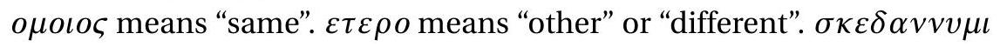\ 意思是“分散”。由于在 \(\sigma \kappa \varepsilon \delta \alpha v v v \mu \iota\) 中希腊字母 \(\kappa\) 的正确音译是“\(\mathrm{k}\)”，这意味着这两个单词的正确英文拼写是“\(\mathrm{k}\)”，如同方差和异方差。
回归导数
解释 CEF \(m(x)=\mathbb{E}[Y \mid X=x]\) 的一种方法是根据回归量 \(X\) 的边际变化如何暗示响应变量 \(Y\) 的条件期望的变化。通常考虑单个回归量的边际变化，比如 \(X_{1}\)，保持余数不变。当回归量 \(X_{1}\) 连续分布时，我们定义 \(X_{1}\) 变化的边际效应，保持变量 \(X_{2}, \ldots, X_{k}\) 固定，作为 CEF 的偏导数
\[ \frac{\partial}{\partial x_{1}} m\left(x_{1}, \ldots, x_{k}\right) \]
当 \(X_{1}\) 是离散的时，我们将边际效应定义为离散差。例如，如果 \(X_{1}\) 是二元的，那么 \(X_{1}\) 对 CEF 的边际效应是
\[ m\left(1, x_{2}, \ldots, x_{k}\right)-m\left(0, x_{2}, \ldots, x_{k}\right) \]
我们可以用符号统一连续和离散的情况
\[ \nabla_{1} m(x)=\left\{\begin{array}{cc} \frac{\partial}{\partial x_{1}} m\left(x_{1}, \ldots, x_{k}\right), & \text { if } X_{1} \text { is continuous } \\ m\left(1, x_{2}, \ldots, x_{k}\right)-m\left(0, x_{2}, \ldots, x_{k}\right), & \text { if } X_{1} \text { is binary. } \end{array}\right. \]
将 \(k\) 效应收集到一个 \(k \times 1\) 向量中，我们定义关于 \(X\) 的回归导数：
\[ \nabla m(x)=\left[\begin{array}{c} \nabla_{1} m(x) \\ \nabla_{2} m(x) \\ \vdots \\ \nabla_{k} m(x) \end{array}\right] \]
当 \(X\) 的所有元素都是连续的时，我们有简化的 \(\nabla m(x)=\frac{\partial}{\partial x} m(x)\)，即偏导数的向量。
关于回归导数的定义，有两点需要记住。首先，在保持其他变量不变的情况下计算每个变量的影响。这是经济学中常用的其他条件不变的概念。但是在回归导数的情况下，条件期望并不能真正保持其他所有条件不变。它只保持条件期望中包含的变量不变。这意味着回归导数取决于包含哪些回归量。例如，在工资对教育、经验、种族和性别的回归中，关于教育的回归导数显示了教育对预期工资的边际效应，保持不变的经验、种族和性别。但它并不保持个人不可观察的特征（如能力）和回归中未包含的变量（如教育质量）保持不变。
其次，回归导数是 \(Y\) 的条件期望的变化，而不是 \(Y\) 对个人的实际价值的变化。很容易将回归导数视为 \(Y\) 实际值的变化，但这不是正确的解释。只有当误差 \(e\) 不受回归量 \(X\) 变化的影响时，回归导数 \(\nabla m(x)\) 才是 \(Y\) 实际值的变化。我们回到第 2.30 节中对因果效应的讨论。
线性 CEF
一个重要的特殊情况是 CEF \(m(x)=\mathbb{E}[Y \mid X=x]\) 在 \(x\) 中是线性的。在这种情况下，我们可以将平均方程写为
\[ m(x)=x_{1} \beta_{1}+x_{2} \beta_{2}+\cdots+x_{k} \beta_{k}+\beta_{k+1} . \]
从符号上讲，把它写成向量 \(x\) 的简单函数很方便。一个简单的方法是通过将数字“1”列为元素来增加回归向量 \(X\)。我们将此称为“常数”，相应的系数称为“截距”。等效地，指定向量 \(x\) 的最后一个元素 \({ }^{9}\) 是 \(x_{k}=1\)。因此 (2.4) 被重新定义为 \(k \times 1\) 向量
\[ X=\left(\begin{array}{c} X_{1} \\ X_{2} \\ \vdots \\ X_{k-1} \\ 1 \end{array}\right) \]
通过这个重新定义，CEF 是
\[ m(x)=x_{1} \beta_{1}+x_{2} \beta_{2}+\cdots+\beta_{k}=x^{\prime} \beta \]
在哪里
\[ \beta=\left(\begin{array}{c} \beta_{1} \\ \vdots \\ \beta_{k} \end{array}\right) \]
是一个 \(k \times 1\) 系数向量。这是线性 CEF 模型。它也经常被称为线性回归模型，或 \(Y\) 对 \(X\) 的回归。
在线性 CEF 模型中，回归导数就是系数向量。那是 \(\nabla m(x)=\beta\)。这是线性 CEF 模型的吸引人的特征之一。作为改变一个变量而保持其他变量不变的边际效应，这些系数具有简单而自然的解释。
\[ \begin{aligned} &\text { Linear CEF Model } \\ &\begin{aligned} Y &=X^{\prime} \beta+e \\ \mathbb{E}[e \mid X] &=0 \end{aligned} \end{aligned} \]
如果另外误差是同方差的，我们称之为同方差线性 CEF 模型。
同方差线性 CEF 模型
\[ \begin{aligned} Y &=X^{\prime} \beta+e \\ \mathbb{E}[e \mid X] &=0 \\ \mathbb{E}\left[e^{2} \mid X\right] &=\sigma^{2} \end{aligned} \]
\({ }^{9}\) 顺序无关紧要。它可以是任何元素。
具有非线性效应的线性 CEF
上一节的线性 CEF 模型没有看起来那么严格，因为我们可以将原始变量的非线性变换作为回归量。从这个意义上说，线性 CEF 框架是灵活的，可以捕捉许多非线性效应。
例如，假设我们有两个标量变量 \(X_{1}\) 和 \(X_{2}\)。 CEF 可以采用二次形式
\[ m\left(x_{1}, x_{2}\right)=x_{1} \beta_{1}+x_{2} \beta_{2}+x_{1}^{2} \beta_{3}+x_{2}^{2} \beta_{4}+x_{1} x_{2} \beta_{5}+\beta_{6} . \]
这个方程在回归变量 \(\left(x_{1}, x_{2}\right)\) 中是二次的，但在系数 \(\beta=\left(\beta_{1}, \ldots, \beta_{6}\right)^{\prime}\) 中是线性的。我们仍然称 (2.14) 为线性 CEF，因为它是系数的线性函数。同时，它具有非线性效应，因为它在基础变量 \(x_{1}\) 和 \(x_{2}\) 中是非线性的。关键是要理解 (2.14) 在变量 \(\left(x_{1}, x_{2}\right)\) 中是二次的，但在系数 \(\beta\) 中是线性的。
为了简化表达式，我们定义了变换 \(x_{3}=x_{1}^{2}, x_{4}=x_{2}^{2}, x_{5}=x_{1} x_{2}\) 和 \(x_{6}=1\)，并将回归向量重新定义为 \(x=\left(x_{1}, \ldots, x_{6}\right)^{\prime}\)。通过这个重新定义，\(m\left(x_{1}, x_{2}\right)=x^{\prime} \beta\) 在 \(\beta\) 中是线性的。对于大多数计量经济学目的（对 \(\beta\) 的估计和推断），\(\beta\) 中的线性是最重要的。
一个例外是回归导数的分析。在诸如 (2.14) 等非线性方程中，回归导数应针对原始变量定义，而不是针对转换后的变量。因此
\[ \begin{aligned} &\frac{\partial}{\partial x_{1}} m\left(x_{1}, x_{2}\right)=\beta_{1}+2 x_{1} \beta_{3}+x_{2} \beta_{5} \\ &\frac{\partial}{\partial x_{2}} m\left(x_{1}, x_{2}\right)=\beta_{2}+2 x_{2} \beta_{4}+x_{1} \beta_{5} . \end{aligned} \]
我们看到，在模型（2.14）中，回归导数不是一个简单的系数，而是几个系数加上 \(\left(x_{1}, x_{2}\right)\) 的水平的函数。因此，很难单独解释这些系数。将它们解释为一个组更有用。
我们通常将 \(\beta_{5}\) 称为交互效应。请注意，它出现在两个回归导数方程中，并且在每个方程中都有一个对称的解释。如果 \(\beta_{5}>0\) 那么关于 \(x_{1}\) 的回归导数在 \(x_{2}\) 的水平上增加（并且关于 \(x_{2}\) 的回归导数在 \(x_{1}\) 的水平上增加），而如果 \(\beta_{5}<0\)反之亦然。
带有虚拟变量的线性 CEF
当所有回归量都取一组有限的值时，结果证明 CEF 可以写成回归量的线性函数。
这个最简单的例子是一个二进制变量，它只接受两个不同的值。例如，在传统数据集中，变量性别只取值男人和女人（或男性和女性）。二元变量在计量经济学应用中极为常见，也称为虚拟变量或指标变量。
考虑单个二元回归器的简单情况。在这种情况下，条件期望只能取两个不同的值。例如，
\[ \mathbb{E}[Y \mid \text { gender }]=\left\{\begin{array}{llc} \mu_{0} & \text { if } \quad \text { gender }=\text { man } \\ \mu_{1} & \text { if gender }=\text { woman. } \end{array}\right. \]
为了便于数学处理，我们用值 \(\{0,1\}\) 记录虚拟变量。例如
\[ X_{1}=\left\{\begin{array}{llc} 0 & \text { if } & \text { gender }=\text { man } \\ 1 & \text { if } & \text { gender }=\text { woman } . \end{array}\right. \]
给定这个符号，我们将条件期望写成虚拟变量 \(X_{1}\) 的线性函数。因此 \(\mathbb{E}\left[Y \mid X_{1}\right]=\beta_{1} X_{1}+\beta_{2}\) 其中 \(\beta_{1}=\mu_{1}-\mu_{0}\) 和 \(\beta_{2}=\mu_{0}\)。在这个简单的回归方程中，截距 \(\beta_{2}\) 等于 \(X_{1}=0\) 子群体（男性）的条件期望 \(Y\)，斜率 \(\beta_{1}\) 等于两个子群体之间条件期望的差异。
或者，我们可以将 \(X_{1}\) 定义为
\[ X_{1}= \begin{cases}1 & \text { if } \quad \text { gender }=\text { man } \\ 0 & \text { if } \quad \text { gender }=\text { woman } .\end{cases} \]
在这种情况下，回归截距是对女性（而不是男性）的期望，并且回归斜率已转换符号。这两个回归是等价的，但系数的解释发生了变化。因此，理解变量的精确定义总是很重要的，并且说明性的标签很有帮助。例如，将 \(X_{1}\) 标记为“性别”无助于区分定义 (2.15) 和 (2.16)。相反，如果使用定义 (2.15)，最好将 \(X_{1}\) 标记为“女性”或“女性”，如果使用定义 (2.16)，则将其标记为“男性”或“男性”。
现在假设我们有两个虚拟变量 \(X_{1}\) 和 \(X_{2}\)。例如，如果此人已婚，则为 \(X_{2}=1\)，否则为 \(X_{2}=0\)。给定 \(X_{1}\) 和 \(X_{2}\) 的条件期望最多取四个可能的值：
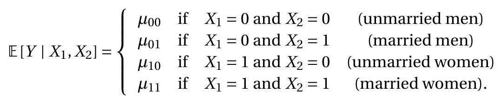
在这种情况下，我们可以将条件均值写为 \(X, X_{2}\) 及其乘积 \(X_{1} X_{2}\) 的线性函数：
\[ \mathbb{E}\left[Y \mid X_{1}, X_{2}\right]=\beta_{1} X_{1}+\beta_{2} X_{2}+\beta_{3} X_{1} X_{2}+\beta_{4} \]
其中 \(\beta_{1}=\mu_{10}-\mu_{00}, \beta_{2}=\mu_{01}-\mu_{00}, \beta_{3}=\mu_{11}-\mu_{10}-\mu_{01}+\mu_{00}\) 和 \(\beta_{4}=\mu_{00}\)。
我们可以将系数 \(\beta_{1}\) 视为性别对未婚工薪者预期对数工资的影响，将系数 \(\beta_{2}\) 视为婚姻对男性工薪者预期对数工资的影响，并将系数 \(\beta_{3}\) 视为差异婚姻对女性和男性预期对数工资的影响之间的关系。或者，它也可以解释为性别对已婚和未婚工资收入者的预期对数工资的影响之间的差异。两种解释同样有效。我们经常将 \(\beta_{3}\) 描述为衡量两个虚拟变量之间的交互作用，或交互效应，而将 \(\beta_{3}=0\) 描述为交互效应为零的情况。
在这个设置中，我们可以看到 CEF 在三个变量 \(\left(X_{1}, X_{2}, X_{1} X_{2}\right)\) 中是线性的。为了将模型放入 \(2.15\) 部分的框架中，我们将回归量 \(X_{3}=X_{1} X_{2}\) 和回归量向量定义为
\[ X=\left(\begin{array}{c} X_{1} \\ X_{2} \\ X_{3} \\ 1 \end{array}\right) . \]
因此，虽然我们从两个虚拟变量开始，但回归量（包括截距）的数量是四个。
如果有三个虚拟变量 \(X_{1}, X_{2}, X_{3}\)，那么 \(\mathbb{E}\left[Y \mid X_{1}, X_{2}, X_{3}\right]\) 最多取 \(2^{3}=8\) 不同的值，并且可以写成线性函数
\[ \mathbb{E}\left[Y \mid X_{1}, X_{2}, X_{3}\right]=\beta_{1} X_{1}+\beta_{2} X_{2}+\beta_{3} X_{3}+\beta_{4} X_{1} X_{2}+\beta_{5} X_{1} X_{3}+\beta_{6} X_{2} X_{3}+\beta_{7 X 1} X_{2} X_{3}+\beta_{8} \]
它有八个回归量，包括截距。一般来说，如果有 \(p\) 虚拟变量 \(X_{1}, \ldots, X_{p}\) 那么 CEF \(\mathbb{E}\left[Y \mid X_{1}, X_{2}, \ldots, X_{p}\right]\) 最多取 \(2^{p}\) 不同的值，并且可以写成 \(2^{p}\) 回归量的线性函数，包括 \(X_{1}, X_{2}, \ldots, X_{p}\) 和所有交叉产品。包含所有 \(2^{p}\) 二元相互作用的线性回归模型称为饱和虚拟变量回归模型。它是条件期望的完整模型。相反，没有交互作用的模型等于
\[ \mathbb{E}\left[Y \mid X_{1}, X_{2}, \ldots, X_{p}\right]=\beta_{1} X_{1}+\beta_{2} X_{2}+\cdots+\beta_{p} X_{p}+\beta_{p} . \]
这有 \(p+1\) 系数而不是 \(2^{p}\)。
我们在本节开始时说，只要所有回归器只取有限数量的可能值，条件期望就是线性的。我们怎么能看到这个？取一个分类变量，例如种族。例如，我们之前将种族分为三类。我们可以记录分类变量，使用数字来表示每个类别，例如
\[ X_{3}=\left\{\begin{array}{lll} 1 & \text { if } & \text { white } \\ 2 & \text { if } & \text { Black } \\ 3 & \text { if } & \text { other. } \end{array}\right. \]
这样做时，\(X_{3}\) 的值在量级方面没有意义，它们只是表示相关类别。
当回归量是分类的时，给定 \(X_{3}\) 的条件期望 \(Y\) 对每种可能性取一个不同的值：
\[ \mathbb{E}\left[Y \mid X_{3}\right]=\left\{\begin{array}{lll} \mu_{1} & \text { if } & X_{3}=1 \\ \mu_{2} & \text { if } & X_{3}=2 \\ \mu_{3} & \text { if } & X_{3}=3 . \end{array}\right. \]
这不是 \(X_{3}\) 本身的线性函数，但可以通过为三个类别中的两个构建虚拟变量来使其成为线性函数。例如
\[ \begin{aligned} &X_{4}=\left\{\begin{array}{llc} 1 & \text { if } & \text { Black } \\ 0 & \text { if } & \text { not Black } \end{array}\right. \\ &X_{5}=\left\{\begin{array}{lll} 1 & \text { if } & \text { other } \\ 0 & \text { if } & \text { not other. } \end{array}\right. \end{aligned} \]
在这种情况下，分类变量 \(X_{3}\) 等价于一对虚拟变量 \(\left(X_{4}, X_{5}\right)\)。显式关系是
\[ X_{3}=\left\{\begin{array}{lll} 1 & \text { if } & X_{4}=0 \text { and } X_{5}=0 \\ 2 & \text { if } & X_{4}=1 \text { and } X_{5}=0 \\ 3 & \text { if } & X_{4}=0 \text { and } X_{5}=1 \end{array}\right. \]
鉴于这些转换，我们可以将 \(Y\) 的条件期望写成 \(X_{4}\) 和 \(X_{5}\) 的线性函数
\[ \mathbb{E}\left[Y \mid X_{3}\right]=\mathbb{E}\left[Y \mid X_{4}, X_{5}\right]=\beta_{1} X_{4}+\beta_{2} X_{5}+\beta_{3} . \]
我们可以将 CEF 写成 \(\mathbb{E}\left[Y \mid X_{3}\right]\) 或 \(\mathbb{E}\left[Y \mid X_{4}, X_{5}\right]\)（它们是等价的），但它只是 \(X_{4}\) 和 \(X_{5}\) 的线性函数。
此设置类似于两个虚拟变量的情况，不同之处在于我们没有包括交互项 \(X_{4} X_{5}\)。这是因为事件 \(\left\{X_{4}=1\right.\) 和 \(\left.X_{5}=1\right\}\) 在构造上是空的，所以 \(X_{4} X_{5}=0\) 根据定义。
最佳线性预测器
虽然条件期望 \(m(X)=\mathbb{E}[Y \mid X]\) 是 \(X\) 的所有函数中 \(Y\) 的最佳预测器，但它的函数形式通常是未知的。特别是，线性 CEF 模型在经验上不太可能准确，除非 \(X\) 是离散且低维的，因此包含所有交互作用。因此，在大多数情况下，将线性规范 (2.13) 视为近似值更为现实。在本节中，我们通过简单的解释得出一个特定的近似值。
定理 \(2.7\) 表明条件期望 \(m(X)\) 是最好的预测器，因为它在所有预测器中均方误差最低。通过扩展，我们可以通过所有线性预测变量中均方误差最小的线性函数来定义 CEF 的近似值。
对于这个推导，我们需要以下正则性条件。
假设 \(2.1\)
- \(\mathbb{E}\left[Y^{2}\right]<\infty\)
- \(\mathbb{E}\|X\|^{2}<\infty\)
- \(\boldsymbol{Q}_{X X}=\mathbb{E}\left[X X^{\prime}\right]\) 是正定的。
在假设 2.1.2 中，我们使用 \(\|x\|=\left(x^{\prime} x\right)^{1 / 2}\) 来表示向量 \(x\) 的欧几里得长度。
假设 \(2.1\) 的前两部分暗示变量 \(Y\) 和 \(X\) 具有有限的均值、方差和协方差。假设的第三部分更具技术性，其作用很快就会显现出来。相当于强加矩阵 \(\boldsymbol{Q}_{X X}=\mathbb{E}\left[X X^{\prime}\right]\) 的列是线性独立的并且矩阵是可逆的。
\(Y\) 的线性预测器是某个 \(\beta \in \mathbb{R}^{k}\) 的函数 \(X^{\prime} \beta\)。均方预测误差为
\[ S(\beta)=\mathbb{E}\left[\left(Y-X^{\prime} \beta\right)^{2}\right] . \]
给定 \(X\) 的 \(Y\) 的最佳线性预测器，写成 \(\mathscr{P}[Y \mid X]\)，是通过选择使 \(S(\beta)\) 最小化的 \(\beta\) 来找到的。
定义 2.5 给定 \(X\) 的 \(Y\) 的最佳线性预测器是
\[ \mathscr{P}[Y \mid X]=X^{\prime} \beta \]
其中 \(\beta\) 最小化均方预测误差
\[ S(\beta)=\mathbb{E}\left[\left(Y-X^{\prime} \beta\right)^{2}\right] . \]
最小化器
\[ \beta=\underset{b \in \mathbb{R}^{k}}{\operatorname{argmin}} S(b) \]
称为线性投影系数。我们现在计算其值的显式表达式。均方预测误差 (2.17) 可以写成 \(\beta\) 的二次函数：
\[ S(\beta)=\mathbb{E}\left[Y^{2}\right]-2 \beta^{\prime} \mathbb{E}[X Y]+\beta^{\prime} \mathbb{E}\left[X X^{\prime}\right] \beta . \]
\(S(\beta)\) 的二次结构意味着我们可以显式求解最小化器。最小化的一阶条件（来自附录 A.20）是
\[ 0=\frac{\partial}{\partial \beta} S(\beta)=-2 \mathbb{E}[X Y]+2 \mathbb{E}\left[X X^{\prime}\right] \beta . \]
将 \((2.20)\) 重写为
\[ 2 \mathbb{E}[X Y]=2 \mathbb{E}\left[X X^{\prime}\right] \beta \]
并除以 2 ，这个方程的形式为
\[ \boldsymbol{Q}_{X Y}=\boldsymbol{Q}_{X X} \beta \]
其中 \(\boldsymbol{Q}_{X Y}=\mathbb{E}[X Y]\) 是 \(k \times 1\) 而 \(\boldsymbol{Q}_{X X}=\mathbb{E}\left[X X^{\prime}\right]\) 是 \(k \times k\)。通过反转矩阵 \(\boldsymbol{Q}_{X X}\) 找到解决方案，并写成
\[ \beta=\boldsymbol{Q}_{X X}^{-1} \boldsymbol{Q}_{X Y} \]
或者
\[ \beta=\left(\mathbb{E}\left[X X^{\prime}\right]\right)^{-1} \mathbb{E}[X Y] . \]
值得花时间理解表达式（2.22）中涉及的符号。 \(\boldsymbol{Q}_{X X}\) 是 \(k \times k\) 矩阵，\(\boldsymbol{Q}_{X Y}\) 是 \(k \times 1\) 列向量。因此，\(\frac{\mathbb{E}[X Y]}{\mathbb{E}\left[X X^{\prime}\right]}\) 或 \(\mathbb{E}[X Y]\left(\mathbb{E}\left[X X^{\prime}\right]\right)^{-1}\) 等替代表达式是不连贯且不正确的。我们现在也可以看到假设 2.1.3 的作用。这等价于假设 \(\boldsymbol{Q}_{X X}\) 有一个逆 \(\boldsymbol{Q}_{X X}^{-1}\)，这是正规方程 (2.21) 的解唯一所必需的，并且等效地，对于 \((2.22)\) 是唯一定义的。在没有假设 \(2.1 .3\) 的情况下，方程 (2.21) 可能有多个解。
我们现在有一个最佳线性预测器的显式表达式：
\[ \mathscr{P}[Y \mid X]=X^{\prime}\left(\mathbb{E}\left[X X^{\prime}\right]\right)^{-1} \mathbb{E}[X Y] . \]
这个表达式也被称为 \(Y\) 在 \(X\) 上的线性投影。
投影误差为
\[ e=Y-X^{\prime} \beta . \]
当（且仅当）条件期望在 \(X\) 中为线性时，这等于回归方程的误差 (2.9)，否则它们是不同的。
重写，我们将 \(Y\) 分解为线性预测器和误差
\[ Y=X^{\prime} \beta+e . \]
一般来说，我们称方程 (2.24) 或 \(X^{\prime} \beta\) 为给定 \(X\) 的 \(Y\) 的最佳线性预测器，或 \(Y\) 在 \(X\) 上的线性投影。等式 (2.24) 也经常被称为 \(Y\) 对 \(X\) 的回归，但由于经济学家在许多情况下使用术语“回归”，这有时会令人困惑。 （回想一下，我们在 \(2.15\) 节中说过，线性 CEF 模型也称为线性回归模型。）
投影误差 \(e\) 的一个重要性质是
\[ \mathbb{E}[X e]=0 . \]
要看到这一点，使用定义 (2.23) 和 (2.22) 以及矩阵属性 \(\boldsymbol{A} \boldsymbol{A}^{-1}=\boldsymbol{I}\) 和 \(\boldsymbol{I} \boldsymbol{a}=\boldsymbol{a}\)，
\[ \begin{aligned} \mathbb{E}[X e] &=\mathbb{E}\left[X\left(Y-X^{\prime} \beta\right)\right] \\ &=\mathbb{E}[X Y]-\mathbb{E}\left[X X^{\prime}\right]\left(\mathbb{E}\left[X X^{\prime}\right]\right)^{-1} \mathbb{E}[X Y] \\ &=0 \end{aligned} \]
如声称的那样。
方程 (2.25) 是一组 \(k\) 方程，每个回归量一个。换句话说，(2.25) 等价于
\[ \mathbb{E}\left[X_{j} e\right]=0 \]
对于 \(j=1, \ldots, k\)。与 (2.12) 中一样，回归向量 \(X\) 通常包含一个常数，例如\(X_{k}=1\)。在这种情况下，\(j=k\) 的 (2.27) 与
\[ \mathbb{E}[e]=0 . \]
因此，当回归向量包含一个常数时，投影误差的平均值为零。 （当 \(X\) 没有常数 (2.28) 时，不能保证。因为希望 \(e\) 具有零均值，这是在任何回归模型中始终包含常数的一个很好的理由。）
观察到因为 \(\operatorname{cov}\left(X_{j}, e\right)=\mathbb{E}\left[X_{j} e\right]-\mathbb{E}\left[X_{j}\right] \mathbb{E}[e]\), then (2.27)-(2.28) 一起暗示变量 \(X_{j}\) 和 \(e\) 不相关也很有用。
这样就完成了模型的推导。我们总结了一些最重要的属性。
定理 2.9 线性投影模型的性质 在假设 2.1 下，
- 矩 \(\mathbb{E}\left[X X^{\prime}\right]\) 和 \(\mathbb{E}[X Y]\) 存在于有限元中。
2.线性投影系数(2.18)存在，唯一，等于
\[ \beta=\left(\mathbb{E}\left[X X^{\prime}\right]\right)^{-1} \mathbb{E}[X Y] . \]
- 给定 \(X\) 的 \(Y\) 的最佳线性预测器是
\[ \mathscr{P}(Y \mid X)=X^{\prime}\left(\mathbb{E}\left[X X^{\prime}\right]\right)^{-1} \mathbb{E}[X Y] . \]
1.存在投影误差\(e=Y-X^{\prime} \beta\)。它满足 \(\mathbb{E}\left[e^{2}\right]<\infty\) 和 \(\mathbb{E}[X e]=0\)。
如果\(X\) 包含一个常数，那么\(\mathbb{E}[e]=0\)。
如果 \(\mathbb{E}|Y|^{r}<\infty\) 和 \(\mathbb{E}\|X\|^{r}<\infty\) 对应 \(r \geq 2\)，那么 \(\mathbb{E}|e|^{r}<\infty\)。
定理 \(2.9\) 的完整证明在第 2.33 节中给出。
反思定理 2.9 的一般性是有用的。唯一的限制是假设 2.1。因此，对于任何具有有限方差的随机变量 \((Y, X)\)，我们可以定义一个具有定理 2.9 中列出的性质的线性方程 (2.24)。不需要更强的假设（例如线性 CEF 模型）。在这个意义上，线性模型（2.24）相当普遍地存在。但是，重要的是不要误解该声明的一般性。线性方程 (2.24) 被定义为最佳线性预测器。它不一定是条件均值，也不一定是结构或因果经济模型的参数。线性投影模型
\[ \begin{aligned} Y &=X^{\prime} \beta+e \\ \mathbb{E}[X e] &=0 \\ \beta &=\left(\mathbb{E}\left[X X^{\prime}\right]\right)^{-1} \mathbb{E}[X Y] \end{aligned} \]
可逆性和识别
只要 \(k \times k\) 矩阵 \(\boldsymbol{Q}_{X X}=\mathbb{E}\left[X X^{\prime}\right]\) 可逆，线性投影系数 \(\beta=\left(\mathbb{E}\left[X X^{\prime}\right]\right)^{-1} \mathbb{E}[X Y]\) 就存在并且是唯一的。矩阵 \(\boldsymbol{Q}_{X X}\) 通常被称为设计矩阵，因为在实验设置中，研究人员能够通过操纵回归量 \(X\) 的分布来控制 \(\boldsymbol{Q}_{X X}\)。
观察任何非零 \(\alpha \in \mathbb{R}^{k}\)，
\[ \alpha^{\prime} \boldsymbol{Q}_{X X} \alpha=\mathbb{E}\left[\alpha^{\prime} X X^{\prime} \alpha\right]=\mathbb{E}\left[\left(\alpha^{\prime} X\right)^{2}\right] \geq 0 \]
所以 \(\boldsymbol{Q}_{X X}\) 通过构造是半正定的，通常写为 \(\boldsymbol{Q}_{X X} \geq 0\)。它是正定的假设意味着这是一个严格的不等式\(\mathbb{E}\left[\left(\alpha^{\prime} X\right)^{2}\right]>0\)。这通常写为 \(\boldsymbol{Q}_{X X}>0\)。这个条件意味着不存在与 \(\alpha^{\prime} X=0\) 相同的非零向量 \(\alpha\)。正定矩阵是可逆的。因此，当 \(\boldsymbol{Q}_{X X}>0\) 时 \(\beta=\left(\mathbb{E}\left[X X^{\prime}\right]\right)^{-1} \mathbb{E}[X Y]\) 存在并且是唯一定义的。换句话说，如果我们可以排除 \(X\) 的线性函数退化的可能性，那么 \(\beta\) 是唯一定义的。
定理 \(2.5\) 表明线性投影系数 \(\beta\) 在假设 2.1 下被识别（唯一确定）。关键是 \(\boldsymbol{Q}_{X X}\) 的可逆性。否则，方程没有唯一解
\[ \boldsymbol{Q}_{X X} \beta=\boldsymbol{Q}_{X Y} . \]
当 \(\boldsymbol{Q}_{X X}\) 不可逆时，(2.29) 有多种解。在这种情况下，系数 \(\beta\) 没有被识别，因为它没有唯一值。
最小化
均方预测误差 (2.19) 是具有形式向量参数的函数
\[ f(x)=a-2 b^{\prime} x+x^{\prime} \boldsymbol{C} x \]
其中 \(\boldsymbol{C}>0\)。对于这种形式的任何函数，唯一的最小化器是
\[ x=\boldsymbol{C}^{-1} b . \]
为了看到这是唯一的最小化器，我们提供了两个证明。第一个使用矩阵微积分。来自附录 A.20
\[ \begin{gathered} \frac{\partial}{\partial x}\left(b^{\prime} x\right)=b \\ \frac{\partial}{\partial x}\left(x^{\prime} \boldsymbol{C} x\right)=2 \boldsymbol{C} x \\ \frac{\partial^{2}}{\partial x \partial x^{\prime}}\left(x^{\prime} \boldsymbol{C} x\right)=2 \boldsymbol{C} . \end{gathered} \]
使用 (2.31) 和 (2.32)，我们发现
\[ \frac{\partial}{\partial x} f(x)=-2 b+2 \boldsymbol{C} x . \]
最小化的一阶条件将此导数设置为零。因此解满足\(-2 b+2 \boldsymbol{C} x=0\)。求解 \(x\) 我们找到 (2.30)。使用 (2.33) 我们还发现
\[ \frac{\partial^{2}}{\partial x \partial x^{\prime}} f(x)=2 \boldsymbol{C}>0 \]
这是最小化的二阶条件。这表明 (2.30) 是 \(f(x)\) 的唯一最小值。
我们的第二个证明是代数的。将 \(f(x)\) 重写为
\[ f(x)=\left(a-b^{\prime} \boldsymbol{C}^{-1} b\right)+\left(x-\boldsymbol{C}^{-1} b\right)^{\prime} \boldsymbol{C}\left(x-\boldsymbol{C}^{-1} b\right) . \]
第一项不依赖于 \(x\)，因此不影响最小化器。第二项是正定矩阵中的二次形式。这意味着对于任何非零 \(\alpha, \alpha^{\prime} \boldsymbol{C} \alpha>0\)。因此对于 \(x \neq C^{-1} b\)，第二项是严格正数，而对于 \(x=C^{-1} b\)，这个项等于 0。因此，如所声称的，它被最小化为 \(x=C^{-1} b\)。
最佳线性预测器的插图
我们使用前面部分介绍的三个对数工资方程来说明最佳线性预测器（投影）。
对于我们的第一个示例，我们考虑一个具有性别和种族两个虚拟变量的模型，类似于表 2.1。正如我们在 2.17 节中了解到的，该表中的条目可以等效地用线性 CEF 表示。为简单起见，让我们将 \(\log (\) 工资 \()\) 的 CEF 视为 Black 和 female 的函数。
\[ \mathbb{E}[\log (\text { wage }) \mid \text { Black, female }]=-0.20 \text { Black }-0.24 \text { female }+0.10 \text { Black } \times \text { female }+3.06 \text {. } \]
这是一个 CEF，因为变量是二元的并且包括所有交互。
现在考虑一个省略交互作用的更简单的模型。这是变量 Black 和 female 的线性投影
\[ \mathscr{P}[\log (\text { wage }) \mid \text { Black, female }]=-0.15 \text { Black }-0.23 \text { female }+3.06 . \]
有什么区别？完整的 CEF (2.34) 表明种族差距按性别区分：黑人男性（相对于非黑人男性）为 \(20 %\)，黑人女性（相对于非黑人女性）为 \(10 %\)。投影模型 (2.35) 简化了这一分析，计算了黑人工薪阶层的平均 \(15 %\) 工资差距，而忽略了性别的作用。请注意，尽管（2.35）中包含了性别这一事实。
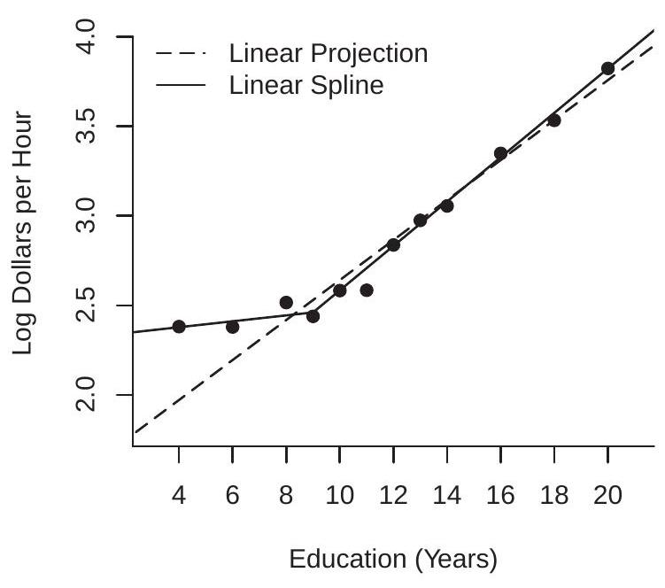
- 对教育的预测
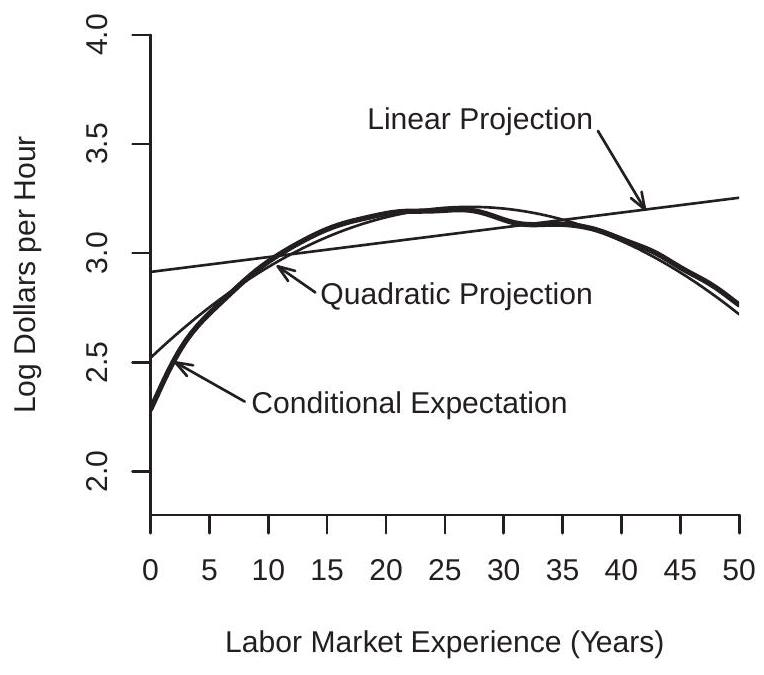
- 对经验的预测
图 2.6：对数工资对教育和经验的预测
对于我们的第二个示例，我们将对数工资的 CEF 视为白人男性受教育年限的函数，如图 \(2.3\) 所示，并在图 2.6(a) 中重复。叠加在图上的是两个投影。第一个（由虚线给出）是对数工资对教育年限的线性投影
\[ \mathscr{P}[\log (\text { wage }) \mid \text { education }]=0.11 \text { education }+1.5 \text {. } \]
这个简单的等式表明每受教育年的工资平均增加 \(11 %\)。对该图的检查表明，这种近似值对教育 \(\geq 9\) 很有效，但对教育水平较低的个人预测不足。为了纠正这种不平衡，我们使用了一个线性样条方程，它允许高于和低于 9 年教育的不同回报率：
\[ \begin{aligned} &\mathscr{P}[\log (\text { wage }) \mid \text { education, }(\text { education }-9) \times \mathbb{1} \text { education }>9\}] \\ &=0.02 \text { education }+0.10 \times(\text { education }-9) \times \mathbb{1} \text { education }>9\}+2.3 . \end{aligned} \]
这个方程用实线显示在图 2.6(a) 中，看起来拟合得更好。它表明每教育年低于 9 的平均工资增加 \(2 %\)，并且每教育年超过 9 的平均工资增加 \(12 %\)。它仍然是条件均值的近似值，但似乎相当合理。
对于我们的第三个示例，我们将受过 12 年教育的白人男性的对数工资的 CEF 作为多年经验的函数，如图 \(2.4\) 所示，并在图 2.6(b) 中以实线重复。叠加在图上的是两个投影。第一个（由点划线给出）是经验的线性投影
\[ \mathscr{P}[\log (\text { wage }) \mid \text { experience }]=0.011 \text { experience }+2.5 \]
第二个（由虚线给出）是经验的线性投影及其平方
\[ \mathscr{P}[\log (\text { wage }) \mid \text { experience }]=0.046 \text { experience }-0.0007 \text { experience }^{2}+2.3 \text {. } \]
从图 \(2.6(\mathrm{~b})\) 的检查中可以清楚地看出，第一个线性投影是一个很差的近似值。它高估了年轻和年长工人的工资，低估了其余工人的工资，并错过了年长工薪阶层预期工资的强劲下滑。第二个投影更合适。我们可以称这个方程为二次投影，因为这个函数在经验上是二次的。
线性预测误差方差
与 CEF 模型一样，我们将误差方差定义为 \(\sigma^{2}=\mathbb{E}\left[e^{2}\right]\)。设置 \(Q_{Y Y}=\mathbb{E}\left[Y^{2}\right]\) 和 \(\boldsymbol{Q}_{Y X}=\) \(\mathbb{E}\left[Y X^{\prime}\right]\) 我们可以将 \(\sigma^{2}\) 写为
\[ \begin{aligned} \sigma^{2} &=\mathbb{E}\left[\left(Y-X^{\prime} \beta\right)^{2}\right] \\ &=\mathbb{E}\left[Y^{2}\right]-2 \mathbb{E}\left[Y X^{\prime}\right] \beta+\beta^{\prime} \mathbb{E}\left[X X^{\prime}\right] \beta \\ &=Q_{Y Y}-2 \boldsymbol{Q}_{Y X} \boldsymbol{Q}_{X X}^{-1} \boldsymbol{Q}_{X Y}+\boldsymbol{Q}_{Y X} \boldsymbol{Q}_{X X}^{-1} \boldsymbol{Q}_{X X} \boldsymbol{Q}_{X X}^{-1} \boldsymbol{Q}_{X Y} \\ &=Q_{Y Y}-\boldsymbol{Q}_{Y X} \boldsymbol{Q}_{X X}^{-1} \boldsymbol{Q}_{X Y} \\ & \stackrel{\text { def }}{=} Q_{Y Y \cdot X} . \end{aligned} \]
这个公式的一个有用特征是它表明 \(Q_{Y Y \cdot X}=Q_{Y Y}-\boldsymbol{Q}_{Y X} \boldsymbol{Q}_{X X}^{-1} \boldsymbol{Q}_{X Y}\) 等于 \(Y\) 在 \(X\) 上的线性投影的误差方差。
回归系数
有时将常数与其他回归量分开并将线性投影方程写成格式是有用的
\[ Y=X^{\prime} \beta+\alpha+e \]
其中 \(\alpha\) 是截距，\(X\) 不包含常数。
考虑这个方程的期望，我们发现
\[ \mathbb{E}[Y]=\mathbb{E}\left[X^{\prime} \beta\right]+\mathbb{E}[\alpha]+\mathbb{E}[e] \]
或 \(\mu_{Y}=\mu_{X}^{\prime} \beta+\alpha\) 其中 \(\mu_{Y}=\mathbb{E}[Y]\) 和 \(\mu_{X}=\mathbb{E}[X]\)，因为 \(\mathbb{E}[e]=0\) 来自 (2.28)。 （虽然 \(X\) 不包含常数，但方程（2.28）仍然适用。）重新排列，我们找到 \(\alpha=\mu_{Y}-\mu_{X}^{\prime} \beta\)。从（2.37）中减去这个方程，我们发现
\[ Y-\mu_{Y}=\left(X-\mu_{X}\right)^{\prime} \beta+e, \]
中心变量 \(Y-\mu_{Y}\) 和 \(X-\mu_{X}\) 之间的线性方程。 （它们以均值为中心，均值为零的随机变量也是如此。）因为 \(X-\mu_{X}\) 与 \(e\) 不相关，所以 (2.38) 也是一个线性投影。因此由线性投影模型的公式，
\[ \begin{aligned} \beta &=\left(\mathbb{E}\left[\left(X-\mu_{X}\right)\left(X-\mu_{X}\right)^{\prime}\right]\right)^{-1} \mathbb{E}\left[\left(X-\mu_{X}\right)\left(Y-\mu_{Y}\right)\right] \\ &=\operatorname{var}[X]^{-1} \operatorname{cov}(X, Y) \end{aligned} \]
仅是 \(X\) 和 \(Y\) 的协方差 \({ }^{10}\) 的函数。
定理 2.10 在线性投影模型 \(Y=X^{\prime} \beta+\alpha+e\) 中，
\[ \alpha=\mu_{Y}-\mu_{X}^{\prime} \beta \]
和
\[ \beta=\operatorname{var}[X]^{-1} \operatorname{cov}(X, Y) . \]
回归子向量
让回归量被划分为
\[ X=\left(\begin{array}{l} X_{1} \\ X_{2} \end{array}\right) \]
我们可以将 \(Y\) 在 \(X\) 上的投影写成
\[ \begin{aligned} Y &=X^{\prime} \beta+e \\ &=X_{1}^{\prime} \beta_{1}+X_{2}^{\prime} \beta_{2}+e \\ \mathbb{E}[X e] &=0 . \end{aligned} \]
在本节中，我们推导出子向量 \(\beta_{1}\) 和 \(\beta_{2}\) 的公式。
分区 \(\boldsymbol{Q}_{X X}\) 与 \(X\) 一致
\[ \boldsymbol{Q}_{X X}=\left[\begin{array}{ll} \boldsymbol{Q}_{11} & \boldsymbol{Q}_{12} \\ \boldsymbol{Q}_{21} & \boldsymbol{Q}_{22} \end{array}\right]=\left[\begin{array}{ll} \mathbb{E}\left[X_{1} X_{1}^{\prime}\right] & \mathbb{E}\left[X_{1} X_{2}^{\prime}\right] \\ \mathbb{E}\left[X_{2} X_{1}^{\prime}\right] & \mathbb{E}\left[X_{2} X_{2}^{\prime}\right] \end{array}\right] \]
同样地
\[ \boldsymbol{Q}_{X Y}=\left[\begin{array}{l} \boldsymbol{Q}_{1 Y} \\ \boldsymbol{Q}_{2 Y} \end{array}\right]=\left[\begin{array}{c} \mathbb{E}\left[X_{1} Y\right] \\ \mathbb{E}\left[X_{2} Y\right] \end{array}\right] . \]
由分区矩阵求逆公式（A.3）
\[ \boldsymbol{Q}_{X X}^{-1}=\left[\begin{array}{ll} \boldsymbol{Q}_{11} & \boldsymbol{Q}_{12} \\ \boldsymbol{Q}_{21} & \boldsymbol{Q}_{22} \end{array}\right]^{-1} \stackrel{\operatorname{def}}{=}\left[\begin{array}{ll} \boldsymbol{Q}^{11} & \boldsymbol{Q}^{12} \\ \boldsymbol{Q}^{21} & \boldsymbol{Q}^{22} \end{array}\right]=\left[\begin{array}{cc} \boldsymbol{Q}_{11 \cdot 2}^{-1} & -\boldsymbol{Q}_{11 \cdot 2}^{-1} \boldsymbol{Q}_{12} \boldsymbol{Q}_{22}^{-1} \\ -\boldsymbol{Q}_{22 \cdot 1}^{-1} \boldsymbol{Q}_{21} \boldsymbol{Q}_{11}^{-1} & \boldsymbol{Q}_{22 \cdot 1}^{-1} \end{array}\right] \]
\({ }^{10}\) 向量 \(X\) 和 \(Z\) 之间的协方差矩阵是 \(\operatorname{cov}(X, Z)=\mathbb{E}\left[(X-\mathbb{E}[X])(Z-\mathbb{E}[Z])^{\prime}\right]\)。 \(\operatorname{vector} X\) 的协方差矩阵是 \(\operatorname{var}[X]=\operatorname{cov}(X, X)=\mathbb{E}\left[(X-\mathbb{E}[X])(X-\mathbb{E}[X])^{\prime}\right]\)。其中 \(\boldsymbol{Q}_{11 \cdot 2} \stackrel{\text { def }}{=} \boldsymbol{Q}_{11}-\boldsymbol{Q}_{12} \boldsymbol{Q}_{22}^{-1} \boldsymbol{Q}_{21}\) 和 \(\boldsymbol{Q}_{22 \cdot 1} \stackrel{\text { def }}{=} \boldsymbol{Q}_{22}-\boldsymbol{Q}_{21} \boldsymbol{Q}_{11}^{-1} \boldsymbol{Q}_{12}\)。因此
\[ \begin{aligned} \beta &=\left(\begin{array}{l} \beta_{1} \\ \beta_{2} \end{array}\right) \\ &=\left[\begin{array}{cc} \boldsymbol{Q}_{11 \cdot 2}^{-1} & -\boldsymbol{Q}_{11 \cdot 2}^{-1} \boldsymbol{Q}_{12} \boldsymbol{Q}_{22}^{-1} \\ -\boldsymbol{Q}_{22 \cdot 1}^{-1} \boldsymbol{Q}_{21} \boldsymbol{Q}_{11}^{-1} & \boldsymbol{Q}_{22 \cdot 1}^{-1} \end{array}\right]\left[\begin{array}{l} \boldsymbol{Q}_{1 Y} \\ \boldsymbol{Q}_{2 Y} \end{array}\right] \\ &=\left(\begin{array}{c} \boldsymbol{Q}_{11 \cdot 2}^{-1}\left(\boldsymbol{Q}_{1 y}-\boldsymbol{Q}_{12} \boldsymbol{Q}_{22}^{-1} \boldsymbol{Q}_{2 Y}\right) \\ \boldsymbol{Q}_{22 \cdot 1}^{-1}\left(\boldsymbol{Q}_{2 y}-\boldsymbol{Q}_{21} \boldsymbol{Q}_{11}^{-1} \boldsymbol{Q}_{1 Y}\right) \end{array}\right) \\ &=\left(\begin{array}{c} \boldsymbol{Q}_{11 \cdot 2}^{-1} \boldsymbol{Q}_{1 Y \cdot 2} \\ \boldsymbol{Q}_{22 \cdot 1}^{-1} \boldsymbol{Q}_{2 Y \cdot 1} \end{array}\right) \end{aligned} \]
我们已经证明了 \(\beta_{1}=\boldsymbol{Q}_{11 \cdot 2}^{-1} \boldsymbol{Q}_{1 Y \cdot 2}\) 和 \(\beta_{2}=\boldsymbol{Q}_{22 \cdot 1}^{-1} \boldsymbol{Q}_{2 Y \cdot 1}\)。
系数分解
在上一节中，我们导出了系数子向量 \(\beta_{1}\) 和 \(\beta_{2}\) 的公式。我们现在使用这些公式根据迭代投影给出对系数的有用解释。
对案例 \(\operatorname{dim}\left(X_{1}\right)=1\) 取等式 (2.42)，使得 \(\beta_{1} \in \mathbb{R}\)。
\[ Y=X_{1} \beta_{1}+X_{2}^{\prime} \beta_{2}+e . \]
现在考虑 \(X_{1}\) 在 \(X_{2}\) 上的投影：
\[ \begin{aligned} X_{1} &=X_{2}^{\prime} \gamma_{2}+u_{1} \\ \mathbb{E}\left[X_{2} u_{1}\right] &=0 . \end{aligned} \]
从 (2.22) 和 (2.36)，\(\gamma_{2}=\boldsymbol{Q}_{22}^{-1} \boldsymbol{Q}_{21}\) 和 \(\mathbb{E}\left[u_{1}^{2}\right]=\boldsymbol{Q}_{11 \cdot 2}=\boldsymbol{Q}_{11}-\boldsymbol{Q}_{12} \boldsymbol{Q}_{22}^{-1} \boldsymbol{Q}_{21}\)。我们也可以计算出
\[ \mathbb{E}\left[u_{1} Y\right]=\mathbb{E}\left[\left(X_{1}-\gamma_{2}^{\prime} X_{2}\right) Y\right]=\mathbb{E}\left[X_{1} Y\right]-\gamma_{2}^{\prime} \mathbb{E}\left[X_{2} Y\right]=\boldsymbol{Q}_{1 Y}-\boldsymbol{Q}_{12} \boldsymbol{Q}_{22}^{-1} \boldsymbol{Q}_{2 Y}=\boldsymbol{Q}_{1 Y \cdot 2} . \]
我们发现
\[ \beta_{1}=\boldsymbol{Q}_{11 \cdot 2}^{-1} \boldsymbol{Q}_{1 Y \cdot 2}=\frac{\mathbb{E}\left[u_{1} Y\right]}{\mathbb{E}\left[u_{1}^{2}\right]} \]
来自 \(Y\) 对 \(u_{1}\) 的简单回归的系数。
这意味着在多元投影方程 (2.44) 中，系数 \(\beta_{1}\) 等于 \(Y\) 在 \(u_{1}\) 上的回归的投影系数，\(X_{1}\) 在其他回归器 \(NA\)u_{1}$ 可以被认为是 \(X_{1}\) 的组成部分，其他回归量不能线性解释。因此，系数 \(\beta_{1}\) 等于 \(X_{1}\) 在去除其他变量的影响后对 \(Y\) 的线性影响。
变量 \(X_{1}\) 的选择没有什么特别之处。该推导对称地应用于线性投影中的所有系数。每个系数等于 \(Y\) 对来自该回归量在所有其他回归量上的投影的误差的简单回归。在线性控制所有其他回归变量之后，每个系数等于该变量对 \(Y\) 的线性影响。
省略变量偏差
同样，让回归量按 (2.41) 进行划分。仅考虑 \(Y\) 在 \(X_{1}\) 上的投影。也许这样做是因为没有观察到变量 \(X_{2}\)。这是等式
\[ \begin{aligned} Y &=X_{1}^{\prime} \gamma_{1}+u \\ \mathbb{E}\left[X_{1} u\right] &=0 . \end{aligned} \]
请注意，我们将系数写成 \(\gamma_{1}\) 而不是 \(\beta_{1}\)，误差写成 \(u\) 而不是 \(e\)。这是因为 (2.45) 与 (2.42) 不同。 Goldberger (1991) 为 (2.42) 引入了长回归和 (2.45) 的短回归以强调区别。
通常为 \(\beta_{1} \neq \gamma_{1}\)，特殊情况除外。为了看到这一点，我们计算
\[ \begin{aligned} \gamma_{1} &=\left(\mathbb{E}\left[X_{1} X_{1}^{\prime}\right]\right)^{-1} \mathbb{E}\left[X_{1} Y\right] \\ &=\left(\mathbb{E}\left[X_{1} X_{1}^{\prime}\right]\right)^{-1} \mathbb{E}\left[X_{1}\left(X_{1}^{\prime} \beta_{1}+X_{2}^{\prime} \beta_{2}+e\right)\right] \\ &=\beta_{1}+\left(\mathbb{E}\left[X_{1} X_{1}^{\prime}\right]\right)^{-1} \mathbb{E}\left[X_{1} X_{2}^{\prime}\right] \beta_{2} \\ &=\beta_{1}+\Gamma_{12} \beta_{2} \end{aligned} \]
其中 \(\Gamma_{12}=\boldsymbol{Q}_{11}^{-1} \boldsymbol{Q}_{12}\) 是 \(X_{2}\) 在 \(X_{1}\) 上的投影的系数矩阵，我们使用第 \(2.22\) 中的符号。
观察 \(\gamma_{1}=\beta_{1}+\Gamma_{12} \beta_{2} \neq \beta_{1}\)，除非 \(\Gamma_{12}=0\) 或 \(\beta_{2}=0\)。因此，短期和长期回归具有不同的系数。它们仅在两种条件之一下是相同的。首先，如果 \(X_{2}\) 在 \(X_{1}\) 上的投影产生一组零系数（它们不相关），或者其次，如果 (2.42) 中 \(X_{2}\) 上的系数为零。 \(\gamma_{1}\) 和 \(\beta_{1}\) 之间的差异 \(\Gamma_{12} \beta_{2}\) 称为遗漏变量偏差。这是遗漏相关相关变量的结果。
为避免遗漏变量偏差，标准建议是在估计模型中包含所有可能相关的变量。通过构造，一般模型将没有这种偏差。不幸的是，在许多情况下，完全遵循此建议是不可行的，因为没有观察到许多所需的变量。在这种情况下，应在实证调查过程中承认和讨论遗漏变量偏差的可能性。
例如，假设 \(Y\) 是对数工资，\(X_{1}\) 是教育，\(X_{2}\) 是智力。假设教育和智力能力呈正相关（能力强的人获得更高水平的教育）似乎是合理的，这意味着 \(\Gamma_{12}>0\)。假设以教育为条件，智力较高的人平均会获得较高的工资，这似乎也是合理的，因此 \(\beta_{2}>0\)。这意味着 \(\Gamma_{12} \beta_{2}>0\) 和 \(\gamma_{1}=\beta_{1}+\Gamma_{12} \beta_{2}>\beta_{1}\)。因此，似乎可以合理地预期，在忽略智力的工资对教育的回归中（因为后者没有被测量），教育的系数高于在包括智力的回归中。换句话说，在这种情况下，被遗漏的变量使回归系数向上偏移。例如，有可能 \(\beta_{1}=0\) 使得教育对工资没有直接影响，但 \(\gamma_{1}=\Gamma_{12} \beta_{2}>0\) 意味着仅教育的回归系数是正的，但它是教育和智力之间未建模相关性的结果。
不幸的是，正如 Luca、Magnus 和 Peracchi (2018) 所发现的，上述对遗漏变量偏差的简单表征并没有立即延续到更复杂的设置。例如，假设我们比较三个嵌套投影
\[ \begin{aligned} &Y=X_{1}^{\prime} \gamma_{1}+u_{1} \\ &Y=X_{1}^{\prime} \delta_{1}+X_{2}^{\prime} \delta_{2}+u_{2} \\ &Y=X_{1}^{\prime} \beta_{1}+X_{2}^{\prime} \beta_{2}+X_{3}^{\prime} \beta_{3}+e . \end{aligned} \]
我们可以称它们为短期、中期和长期回归。假设在长回归中感兴趣的参数是 \(\beta_{1}\)。我们对在估计中回归时省略 \(X_{3}\) 以及在估计短回归时同时省略 \(X_{2}\) 和 \(X_{3}\) 的后果感兴趣。特别是我们对这个问题感兴趣：估计短期回归还是中期回归更好，因为两者都省略了 \(X_{3}\) ？直觉表明，中等回归应该“偏差较小”，但值得更详细地研究。通过与上述类似的计算，我们发现
\[ \begin{aligned} &\gamma_{1}=\beta_{1}+\Gamma_{12} \beta_{2}+\Gamma_{13} \beta_{3} \\ &\delta_{1}=\beta_{1}+\Gamma_{13 \cdot 2} \beta_{3} \end{aligned} \]
其中 \(\Gamma_{13 \cdot 2}=\boldsymbol{Q}_{11 \cdot 2}^{-1} \boldsymbol{Q}_{13 \cdot 2}\) 使用 \(2.22\) 节中的符号。
我们看到，短回归系数的偏差是 \(\Gamma_{12} \beta_{2}+\Gamma_{13} \beta_{3}\)，它同时依赖于 \(\beta_{2}\) 和 \(\beta_{3}\)，而中等回归系数的偏差是 \(\Gamma_{13 \cdot 2} \beta_{3}\)，它只依赖于 \(\beta_{3}\)。因此，中回归的偏差不那么复杂，直观上似乎比短回归的偏差更小。但是，不可能对两者进行严格的排名。 \(\gamma_{1}\) 的偏差很可能比 \(\delta_{1}\) 小。因此，作为一般规则，中回归的估计是否会比短回归的估计更小偏差是未知的。
最佳线性逼近
有其他方法可以构建条件期望 \(m(X)\) 的线性逼近 \(X^{\prime} \beta\)。在本节中，我们展示了一种替代方法可以产生与最佳线性预测器相同的答案。
我们首先将 \(X^{\prime} \beta\) 到 \(m(X)\) 的均方逼近误差定义为 \(X^{\prime} \beta\) 和条件期望 \(m(X)\) 之间的期望平方差
\[ d(\beta)=\mathbb{E}\left[\left(m(X)-X^{\prime} \beta\right)^{2}\right] . \]
函数 \(d(\beta)\) 是对 \(X^{\prime} \beta\) 与 \(m(X)\) 偏差的度量。如果两个函数相同，则为 \(d(\beta)=0\)，否则为 \(d(\beta)>0\)。我们还可以将均方差 \(d(\beta)\) 视为函数 \(\left(m(X)-X^{\prime} \beta\right)^{2}\) 的密度加权平均值，因为
\[ d(\beta)=\int_{\mathbb{R}^{k}}\left(m(x)-x^{\prime} \beta\right)^{2} f_{X}(x) d x \]
其中 \(f_{X}(x)\) 是 \(X\) 的边际密度。
然后，我们可以将条件 \(m(X)\) 的最佳线性近似定义为通过选择 \(\beta\) 以最小化 \(d(\beta)\) 获得的函数 \(X^{\prime} \beta\)：
\[ \beta=\underset{b \in \mathbb{R}^{k}}{\operatorname{argmin}} d(b) . \]
与最佳线性预测器类似，我们通过预期平方误差来测量准确性。不同之处在于最佳线性预测器 (2.18) 选择 \(\beta\) 以最小化预期平方预测误差，而最佳线性近似 (2.46) 选择 \(\beta\) 以最小化预期平方逼近误差。
尽管定义不同，但事实证明最佳线性预测器和最佳线性近似值是相同的。通过与（2.18）中相同的步骤加上条件期望的应用，我们可以发现
\[ \begin{aligned} \beta &=\left(\mathbb{E}\left[X X^{\prime}\right]\right)^{-1} \mathbb{E}[X m(X)] \\ &=\left(\mathbb{E}\left[X X^{\prime}\right]\right)^{-1} \mathbb{E}[X Y] \end{aligned} \]
（见习题 2.19）。因此 (2.46) 等于 (2.18)。我们得出结论，定义（2.46）可以被视为线性投影系数的替代动机。
回归均值
回归一词起源于弗朗西斯·高尔顿（Francis Galton）（1886 年）的一篇有影响力的论文，他在该论文中研究了父母和孩子的身高（身高）的联合分布。实际上，他是在根据父母的身高估计孩子身高的条件期望。高尔顿发现这个条件期望与 \(2 / 3\) 的斜率近似线性。这意味着平均而言，孩子的身高比他或她父母的身高更平庸（平均）。高尔顿将这种现象称为均值回归，而标签回归至今仍用于描述大多数条件关系。
高尔顿的基本见解之一是认识到如果 \(Y\) 和 \(X\) 的边际分布相同（例如，在稳定环境中孩子和父母的身高），那么线性投影中的回归斜率总是小于 1 .
更准确地说，采用简单的线性投影
\[ Y=X \beta+\alpha+e \]
其中 \(Y\) 等于孩子的身高，\(X\) 等于父母的身高。假设 \(Y\) 和 \(X\) 具有相同的期望，因此 \(\mu_{Y}=\mu_{X}=\mu\)。然后从 (2.39) \(\alpha=(1-\beta) \mu\) 所以我们可以将线性投影 (2.49) 写为
\[ \mathscr{P}(Y \mid X)=(1-\beta) \mu+X \beta . \]
这表明孩子的预计身高是人口期望 \(\mu\) 和父母身高 \(X\) 的加权平均值，权重为 \(\beta\) 和 \(1-\beta\)。当高度分布在各代之间是稳定的使得 \(\operatorname{var}[Y]=\operatorname{var}[X]\)，那么这个斜率就是 \(Y\) 和 \(X\) 的简单相关。使用 (2.40)
\[ \beta=\frac{\operatorname{cov}(X, Y)}{\operatorname{var}[X]}=\operatorname{corr}(X, Y) . \]
根据 Cauchy-Schwarz 不等式 (B.32)，\(-1 \leq \operatorname{corr}(X, Y) \leq 1\)，\(\operatorname{corr}(X, Y)=1\) 仅在退化情况 \(Y=X\) 中。因此，如果我们排除退化，\(\beta\) 严格小于 1。
这意味着平均而言，孩子的身高比父母的身高更平庸（接近人口平均水平）。
一个常见的错误 - 称为回归谬误 - 是从 \(\beta<1\) 推断总体正在收敛，这意味着其方差正在向零下降。这是一个谬误，因为我们在均值和方差不变的假设下推导出了蕴涵 \(\beta<1\)。所以当然 \(\beta<1\) 并不意味着方差 \(Y\) 小于 \(X\) 的方差。
另一种看待这一点的方法是在方程（2.49）的上下文中检查收敛条件。由于 \(X\) 和 \(e\) 不相关，因此得出
\[ \operatorname{var}[Y]=\beta^{2} \operatorname{var}[X]+\operatorname{var}[e] . \]
那么 \(\operatorname{var}[Y]<\operatorname{var}[X]\) 当且仅当
\[ \beta^{2}<1-\frac{\operatorname{var}[e]}{\operatorname{var}[X]} \]
简单条件 \(|\beta|<1\) 并未暗示这一点。
回归谬误出现在相关的经验情况下。假设您按父母的身高将家庭分组，然后绘制随时间变化的每一代的平均身高。如果人口是稳定的，回归属性意味着地块线将收敛 - 孩子的身高将比他们的父母更平均。回归谬误是错误地得出人口正在收敛的结论。从这个例子中学到的一个信息是，这样的图会误导关于收敛的推断。回归谬误是微妙的。聪明的经济学家很容易屈服于它的诱惑。一个著名的例子是 Horace Secrist 于 1933 年出版的《商业中的平庸的胜利》。在这本书中，Secrist 仔细而详尽地记录了在 19201930 年以上的百货公司样本中，他根据 1920-1921 年将商店分组利润，并绘制了这些群体随后 10 年的平均利润，他发现了清晰而有说服力的证据表明趋同于“趋于平庸”。当然，没有发现——回归均值是稳定分布的必要特征。
反向回归
高尔顿注意到二元分布的另一个有趣特征。 \(Y\) 在 \(X\) 上的回归没有什么特别之处。我们还可以在 \(Y\) 上回归 \(X\)。 （在他的遗传例子中，这是给定孩子身高的父母身高的最佳线性预测因子。）这种回归采用以下形式
\[ X=Y \beta^{*}+\alpha^{*}+e^{*} . \]
这有时被称为反向回归。在这个等式中，系数 \(\alpha^{*}, \beta^{*}\) 和误差 \(e^{*}\) 由线性投影定义。在一个稳定的人群中，我们发现
\[ \begin{gathered} \beta^{*}=\operatorname{corr}(X, Y)=\beta \\ \alpha^{*}=(1-\beta) \mu=\alpha \end{gathered} \]
这与 \(Y\) 在 \(X\) 上的投影完全相同！截距和斜率在正向和反向投影中具有完全相同的值！ [这种平等并不是特别重要；这是假设 \(X\) 和 \(Y\) 具有相同方差的产物。]
虽然这个代数发现非常简单，但它是违反直觉的。相反，对逆回归形式的一个常见但错误的猜测是取方程 (2.49)，除以 \(\beta\) 并重写以找到方程
\[ X=Y \frac{1}{\beta}-\frac{\alpha}{\beta}-\frac{1}{\beta} e \]
表明 \(X\) 在 \(Y\) 上的投影应该有 \(1 / \beta\) 而不是 \(\beta\) 的斜率系数，并且截距是 \(-\alpha / \beta\) 而不是 \(\alpha\)。什么地方出了错？方程（2.51）是完全有效的，因为它是对有效方程（2.49）的简单操作。问题是 (2.51) 既不是 CEF 也不是线性投影。反转投影（或 CEF）不会产生投影（或 CEF）。相反，(2.50) 是有效的投影，而不是 (2.51)。
无论如何，Galton 的发现是，当变量标准化时，两个投影（\(X\) 上的 \(Y\) 和 \(Y\) 上的 \(X\)）的斜率等于相关性，并且两个方程都显示出均值回归。它不是因果关系，而是联合分布的自然特征。
最佳线性投影的局限性
让我们比较一下线性投影和线性 CEF 模型。
从定理 2.4.4 我们知道 CEF 错误具有属性 \(\mathbb{E}[X e]=0\)。因此线性 CEF 是最好的线性投影。然而，反之则不成立，因为投影误差不一定满足 \(\mathbb{E}[e \mid X]=0\)。此外，线性投影可能不是 CEF 的近似值。
为了在一个简单的例子中看到这些点，假设真正的过程是 \(Y=X+X^{2}\) 和 \(X \sim \mathrm{N}(0,1)\)。在这种情况下，真正的 CEF 是 \(m(x)=x+x^{2}\) 并且没有错误。现在考虑 \(Y\) 在 \(X\) 上的线性投影和一个常数，即模型 \(Y=\beta X+\alpha+e\)。由于 \(X \sim \mathrm{N}(0,1)\) 那么 \(X\) 和 \(X^{2}\) 是不相关的，并且线性投影采用 \(\mathscr{P}[Y \mid X]=X+1\) 的形式。这与真正的 CEF \(m(X)=\) \(X+X^{2}\) 完全不同。投影误差等于 \(e=X^{2}-1\)，它是 \(X\) 的确定性函数，但与 \(X\) 不相关。我们在这个例子中看到，投影误差不一定是 CEF 误差，线性投影可能不是 CEF 的近似值。
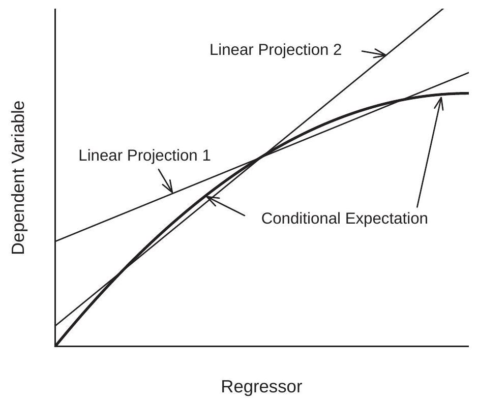
图 2.7：条件期望和两个线性预测
线性投影的另一个缺陷是当条件均值非线性时，它对回归量的边际分布很敏感。我们在图 \(2.7\) 中说明了 \(Y\) 和 \(X\) 的构造 \({ }^{11}\) 联合分布的问题。粗线是给定 \(X\) 的 \(Y\) 的非线性 CEF。数据分为两组 - 第 1 组和第 2 组 - 回归量 \(X\) 的边际分布不同，第 1 组的 \(X\) 平均值低于第 2 组。\(Y\) 的单独线性投影这两组的 \(X\) 在图中用细线显示。这两个预测是 CEF 的不同近似值。线性投影的一个缺陷是它会导致错误的结论，即 \(X\) 对 \(Y\) 的影响对于两组中的个人来说是不同的。这个结论是不正确的，因为实际上条件期望函数没有区别。明显的差异是非线性期望的线性近似与条件变量的不同边际分布相结合的副产品。
\({ }^{11}\) 第 1 组中的 \(X\) 是 \(\mathrm{N}(2,1)\)，第 2 组中的是 \(\mathrm{N}(4,1)\)，\(Y\) 给定 \(X\) 的条件分布是 \(\mathrm{N}(m(X), 1)\)，其中 \(m(x)=2 x-x^{2} / 6\)。这些函数绘制在 \(0 \leq x \leq 6\) 上。
随机系数模型
一个在符号上与线性 CEF 模型相似但在概念上不同的模型是线性随机系数模型。它采用 \(Y=X^{\prime} \eta\) 的形式，其中个体特定系数 \(\eta\) 是随机的并且独立于 \(X\)。例如，如果 \(X\) 是受教育年限，\(Y\) 是对数工资，则 \(\eta\) 是个人特定的受教育回报。如果一个人获得额外一年的教育，\(\eta\) 是他们工资的实际变化。随机系数模型允许受教育的回报因人口而异。有些人的教育回报率可能很高（高 \(\eta\) ），而另一些人的回报率低，可能是 0 ，甚至是负数。
在线性 CEF 模型中，回归系数等于回归导数 - 由于回归变量 \(\beta=\nabla m(X)\) 的变化而导致的条件期望的变化。这不是对特定个体的影响，而是对总体平均数的影响。相反，在随机系数模型中，随机向量 \(\eta=\nabla\left(X^{\prime} \eta\right)\) 是真正的因果效应——响应变量 \(Y\) 本身由于回归量的变化而发生的变化。
然而，有趣的是发现线性随机系数模型意味着线性 CEF。要看到这一点，让 \(\beta=\mathbb{E}[\eta]\) 和 \(\Sigma=\operatorname{var}[\eta]\) 表示 \(\eta\) 的均值和协方差矩阵，然后将随机系数分解为 \(\eta=\beta+u\)，其中 \(u\) 独立于 \(X\) 分布，均值为零，协方差矩阵 \(数学7\)。然后我们可以写
\[ \mathbb{E}[Y \mid X]=X^{\prime} \mathbb{E}[\eta \mid X]=X^{\prime} \mathbb{E}[\eta]=X^{\prime} \beta \]
所以 CEF 在 \(X\) 中是线性的，系数 \(\beta\) 等于随机系数 \(\eta\) 的期望值。
因此，我们可以将方程写为线性 CEF \(Y=X^{\prime} \beta+e\)，其中 \(e=X^{\prime} u\) 和 \(u=\eta-\beta\)。错误在条件下为零：\(\mathbb{E}[e \mid X]=0\)。此外
\[ \operatorname{var}[e \mid X]=X^{\prime} \operatorname{var}[\eta] X=X^{\prime} \Sigma X \]
所以误差是条件异方差的，其方差是 \(X\) 的二次函数。
定理 2.11 在线性随机系数模型 \(Y=X^{\prime} \eta\) 中，\(\eta\) 独立于 \(X, \mathbb{E}\|X\|^{2}<\infty\) 和 \(\mathbb{E}\|\eta\|^{2}<\infty\)，则
\[ \begin{aligned} \mathbb{E}[Y \mid X] &=X^{\prime} \beta \\ \operatorname{var}[Y \mid X] &=X^{\prime} \Sigma X \end{aligned} \]
其中 \(\beta=\mathbb{E}[\eta]\) 和 \(\Sigma=\operatorname{var}[\eta]\)
因果效应
到目前为止，我们已经避免了因果关系的概念，但计量经济分析的基本目标通常是衡量变量之间的因果关系。了解决策、行动和政策的原因和影响通常具有极大的兴趣。例如，我们可能对班级规模对考试成绩的影响、警察支出对犯罪率的影响、气候变化对经济活动的影响、受教育年限对工资的影响、制度结构对增长的影响、奖励对行为的有效性、健康结果的医疗程序，或任何各种可能的因果关系。在每种情况下，目标都是了解输入变化对结果的实际影响是什么。我们不仅对条件期望或线性投影感兴趣，我们还想知道实际的变化。
两个固有的障碍是：（1）因果效应通常是特定于个人的； (2) 因果效应通常是无法观察到的。
考虑学校教育对工资的影响。因果效应是如果我们可以在其他所有条件不变的情况下改变他们的教育水平，一个人将获得的实际工资差异。这是针对每个人的，因为他们在这两种不同情况下的就业结果是个人的。因果效应是未观察到的，因为我们能观察到的最多的是他们的实际教育水平和实际工资，但如果他们的教育不同，则不是反事实工资。
具体假设有两个人，詹妮弗和乔治，他们都有可能成为高中毕业生或大学毕业生，并且根据他们的选择，他们都会得到不同的工资。例如，假设 Jennifer 大学毕业生每小时可赚取 \(\$ 10\) an hour as a high-school graduate and \(\$ 20\)，而 George 作为大学毕业生每小时可赚取 \(\$ 8\) as a high-school graduate and \(\$ 12\)。在这个例子中，对于乔治来说，学校教育的因果效应是每小时 \(\$ 10\) a hour for Jennifer and \(\$ 4\)。因果效应是特定于个体的，没有观察到因果效应。
Rubin (1974) 开发了潜在结果框架（也称为 Rubin 因果模型）来阐明这些问题。令 \(Y\) 为标量结果（例如，工资），\(D\) 为二元处理（例如，大学入学率）。作为二进制处理的规范不是必需的，但简化了符号。描述治疗对结果影响的灵活模型是
\[ Y=h(D, U) \]
其中 \(U\) 是 \(\ell \times 1\) 未观察到的随机因子，\(h\) 是函数关系。分别使用简化符号 \(Y(0)=h(0, U)\) 和 \(Y(1)=h(1, U)\) 来表示与非治疗和治疗相关的潜在结果也很常见。该符号隐含地保持 \(U\) 固定。潜在结果因每个人而异，因为它们取决于 \(U\)。例如，如果 \(Y\) 是个人的工资，则不可观察的 \(U\) 可能包括个人的能力、技能、职业道德、人际关系和偏好等特征，所有这些都可能影响他们的工资。在我们的示例中，这些因素通过标签“Jennifer”和“George”进行了总结。
当我们改变 \(D\) 而保持 \(U\) 不变时，鲁宾将这种影响描述为因果关系。在我们的示例中，这意味着在保持其他属性不变的同时改变个人的教育。
定义 2.6 在模型 (2.52) 中，\(D\) 对 \(Y\) 的因果效应是
\[ C(U)=Y(1)-Y(0)=h(1, U)-h(0, U), \]
在保持 \(U\) 不变的情况下，由于治疗引起的 \(Y\) 的变化。
理解 (2.53) 是一个定义，并不一定描述基本或实验意义上的因果关系，这可能会有所帮助。也许将（2.53）标记为结构效应（结构模型内的效应）会更合适。
(2.53) 中定义的治疗 \(C(U)\) 的因果效应是异质和随机的，因为潜在结果 \(Y(0)\) 和 \(Y(1)\) 因个体而异。此外，对于给定的个人，我们不会同时观察 \(Y(0)\) 和 \(Y(1)\)，而只观察到已实现的价值
\[ Y=\left\{\begin{array}{lll} Y(0) & \text { if } & D=0 \\ Y(1) & \text { if } & D=1 . \end{array}\right. \]
表 2.3：示例分布
|College Graduate|0|0|6|10|\(\$ 17.00\)| |:—————|:|:|:|-:|———:| |Difference | | | | | \(\$ 8.25\)|
因此，没有观察到因果效应 \(C(U)\)。
Rubin 的目标是学习 \(C(U)\) 的分布特征，包括其预期值，他称之为平均因果效应。他定义如下。
定义 2.7 在模型 (2.52) 中，\(D\) 对 \(Y\) 的平均因果效应为
\[ \mathrm{ACE}=\mathbb{E}[C(U)]=\int_{\mathbb{R}^{\ell}} C(u) f(u) d u \]
其中 \(f(u)\) 是 \(U\) 的密度。
ACE 是因果效应的总体平均值。扩展我们的 Jennifer&George 示例，假设一半的人口像 Jennifer，而另一半像 George。那么大学对工资的平均因果效应是 \((10+4) / 2=\$ 7\) an hour.
估计 ACE 的一个合理起点是比较治疗和未治疗个体的平均 \(Y\)。在我们的示例中，这是大学毕业生和高中毕业生的平均工资之间的差异。这与结果 \(Y\) 对治疗 \(D\) 的回归系数相同。这等于 ACE 吗？
答案取决于处理 \(D\) 和未观察到的分量 \(U\) 之间的关系。如果 \(D\) 在实验中是随机分配的，那么 \(D\) 和 \(U\) 是独立的并且回归系数等于 ACE。但是，如果 \(D\) 和 \(U\) 是相关的，那么回归系数和 ACE 是不同的。为了看到这一点，观察治疗和未治疗人群的平均结果之间的差异是
\[ \mathbb{E}[Y \mid D=1]-\mathbb{E}[Y \mid D=0]=\int_{\mathbb{R}^{\ell}} h(1, u) f(u \mid D=1) d u-\int_{\mathbb{R}^{\ell}} h(1, u) f(u \mid D=0) d u \]
其中 \(f(u \mid D)\) 是给定 \(D\) 的 \(U\) 的条件密度。如果 \(U\) 独立于 \(D\) 则 \(f(u \mid D)=f(u)\) 和上面的表达式等于 \(\int_{\mathbb{R}^{\ell}}(h(1, u)-h(0, u)) f(u) d u=\) ACE。但是，如果 \(U\) 和 \(D\) 是相关的，则此等式将失败。
为了说明，让我们回到詹妮弗和乔治的例子。假设所有高中生都参加了能力倾向测试。如果学生获得高 \((\mathrm{H})\) 分数，他们以 \(3 / 4\) 的概率上大学，如果学生获得低 (L) 分，他们以 \(1 / 4\) 的概率上大学。进一步假设 Jennifer 以 3/4 的概率获得 \(\mathrm{H}\) 的能力得分，而 George 以 \(1 / 4\) 的概率获得 \(\mathrm{H}\) 的得分。在这种情况下，Jennifer 的 \(62.5 %\) 将上大学 \({ }^{12}\)，而 George 的 \(37.5 %\) 将上大学 \({ }^{13}\)。
一位计量经济学家随机抽样 32 个人并收集有关教育程度和工资的数据，会发现表 2.3 中显示的工资分布。
\(12 \mathbb{P}[\) 大学 \(\mid\) 詹妮弗 \(]=\mathbb{P}[\) 大学 \(\mid H] \mathbb{P}[H \mid\) 詹妮弗 \(]+\mathbb{P}[\) 大学 \(\mid L] \mathbb{P}[L \mid\) 詹妮弗 \(]=(3 / 4)^{2}+(1 / 4)^{2} .\)
\(13 \mathbb{P}[\) 大学 \(\mid\) 乔治 \(]=\mathbb{P}[\) 大学 \(\mid H] \mathbb{P}[H \mid\) 乔治 \(]+\mathbb{P}[\) 大学 \(\mid L] \mathbb{P}[L \mid\) 乔治 \(]=(3 / 4)(1 / 4)+(1 / 4)(3 / 4)\).我们的计量经济学家发现高中毕业生的平均工资是 \(\$ 8.75\) while the average wage among college graduates is \(\$ 17.00\)。 \(\$ 8.25\) is the econometrician’s regression coefficient for the effect of college on wages. But \(\$ 8.25\) 的差异夸大了 \(\$ 7\)NA
要可视化表 \(2.3\)，请查看图 2.8。这四个点是表中的四个教育/工资对，点的大小根据工资分布进行了校准。这两条线是计量经济学家的回归线和平均因果效应。人口中的 Jennifer’s 对应于两条线以上的点，人口中的 George’s 对应于两条线以下的点。因为大多数 Jennifer 上过大学，而大多数 George 没有上过大学，所以回归线从平均因果效应向两个大点倾斜。

图 2.8：平均因果效应与回归
我们从这个分析中得到的第一个教训是，我们需要谨慎地将回归系数解释为因果效应。除非回归量（例如教育程度）可以解释为随机分配，否则不适合因果解释回归系数。
我们的第二课是，如果我们以一组足够丰富的协变量为条件，就可以获得因果解释。我们现在探讨这个问题。
假设除了结果 \(Y\) 和处理 \(D\) 之外，可观察量还包括一组协变量 \(X\)。我们扩展潜在结果模型 (2.52) 以包括 \(X\) ：
\[ Y=h(D, X, U) . \]
我们还扩展了因果效应的定义，以允许对 \(X\) 进行调节。
定义 \(2.8\) 在模型 (2.54) 中，\(D\) 对 \(Y\) 的因果效应是
\[ C(X, U)=h(1, X, U)-h(0, X, U), \]
由于保持 \(X\) 和 \(U\) 不变的治疗，\(Y\) 的变化。
以 \(X=x\) 为条件的 \(D\) 对 \(Y\) 的条件平均因果效应是
\[ \operatorname{ACE}(x)=\mathbb{E}[C(X, U) \mid X=x]=\int_{\mathbb{R}^{\ell}} C(x, u) f(u \mid x) d u \]
其中 \(f(u \mid x)\) 是给定 \(X\) 的 \(U\) 的条件密度。
\(D\) 对 \(Y\) 的无条件平均因果效应为
\[ \mathrm{ACE}=\mathbb{E}[C(X, U)]=\int \operatorname{ACE}(x) f(x) d x \]
其中 \(f(x)\) 是 \(X\) 的密度。
条件平均因果效应 \(\operatorname{ACE}(x)\) 是具有特征 \(X=x\) 的子群体的 ACE。给定对 \((Y, D, X)\) 的观察，我们想测量 \(D\) 对 \(Y\) 的因果影响，并且感兴趣是否可以通过 \(Y\) 对 \((D, X)\) 的回归来获得。我们想将 \(D\) 上的系数解释为因果效应。这合适吗？
我们之前的分析表明，当 \(U\) 独立于回归变量时，可以获得因果解释。虽然这已经足够了，但它比必要的要强。相反，以下内容就足够了。
定义 2.9 条件独立假设 (CIA)。以 \(X\) 为条件，随机变量 \(D\) 和 \(U\) 在统计上是独立的。
CIA 暗示给定 \((D, X)\) 的 \(U\) 的条件密度仅取决于 \(X\)，因此 \(f(u \mid D, X)=\) \(f(u \mid X)\)。这意味着 \(Y\) 对 \((D, X)\) 的回归等于
\[ \begin{aligned} m(d, x) &=\mathbb{E}[Y \mid D=d, X=x] \\ &=\mathbb{E}[h(d, x, U) \mid D=d, X=x] \\ &=\int h(d, x, u) f(u \mid x) d u . \end{aligned} \]
在 CIA 下，回归测量的治疗效果是
\[ \begin{aligned} \nabla m(d, x) &=m(1, x)-m(0, x) \\ &=\int h(1, x, u) f(u \mid x) d u-\int h(0, x, u) f(u \mid x) d u \\ &=\int C(x, u) f(u \mid x) d u \\ &=\operatorname{ACE}(x) . \end{aligned} \]
这是有条件的 ACE。因此，在 CIA 下，回归系数等于 ACE。
我们推断 \(Y\) 对 \((D, X)\) 的回归揭示了当 CIA 成立时治疗的因果影响。这意味着，当我们可以证明回归量 \(X\) 足以控制与治疗相关的因素时，可以对回归分析进行因果解释。
定理 2.12 在结构模型 (2.54) 中，条件独立假设意味着 \(\nabla m(d, x)=\operatorname{ACE}(x)\)，即关于治疗的回归导数等于条件 ACE。
这是一个令人着迷的结果。它表明，只要在以适当的回归量为条件后，不可观察变量独立于处理变量，回归导数就等于条件因果效应。这意味着 CEF 具有因果经济意义，为 CEF 的估计提供了强有力的理由。
了解中央情报局的关键作用很重要。如果 CIA 失败，则回归导数和 ACE 的等式 (2.55) 失败。 CIA 声明以 \(X\) 为条件，变量 \(U\) 和 \(D\) 是独立的。这意味着处理 \(D\) 不受未观察到的个体因素 \(U\) 的影响，并且实际上是随机的。这是一个强有力的假设。在工资/教育示例中，这意味着个人不会根据他们未观察到的特征来选择教育。
然而，了解 CIA 弱于 \(U\) 与回归量 \((D, X)\) 的完全独立性也有帮助。只需要 \(U\) 和 \(D\) 在以 \(X\) 为条件后是独立的。如果 \(X\) 足够丰富，这可能不是限制性的。
回到我们的例子，我们需要一个变量 \(X\)，它打破了 \(D\) 和 \(U\) 之间的依赖关系。在我们的示例中，此变量是能力倾向测试分数，因为上大学的决定是基于测试分数。因此，一旦我们以考试成绩为条件，教育程度和类型是独立的。
要看到这一点，请观察如果学生的考试成绩是 \(\mathrm{H}\)，那么对于 Jennifers 和 Georges，他们上大学 \((D=1)\) 的概率是 \(3 / 4\)。同样，如果他们的考试成绩是 \(\mathrm{L}\)，那么他们上大学的概率对于这两种类型都是 \(1 / 4\)。这意味着大学入学率与类型无关，取决于能力倾向测试分数。
有条件的 ACE 取决于考试成绩。在获得高分的学生中，\(3 / 4\) 是 Jennifers，\(1 / 4\) 是 Georges。因此，分数为 \(\mathrm{H}\) 的学生的条件 ACE 是 \((3 / 4) \times 10+\) \((1 / 4) \times 4=\$ 8.50\). Among students who receive a low test score, \(1 / 4\) are Jennifers and \(3 / 4\) are Georges. Thus the ACE for students with a score of \(\mathrm{L}\) is \((1 / 4) \times 10 +(3 / 4) \times 4=\$ 5.50\)。无条件 ACE 是平均值，\(\mathrm{ACE}=(8.50+5.50) / 2=\$ 7\), because \(50 %\) of students each receive scores of \(\mathrm{H}\) and \(\mathrm{L}\).
定理 \(2.12\) 表明条件 ACE 由包含测试分数的回归揭示。要在工资分布中看到这一点，假设计量经济学家收集有关能力倾向测试分数以及教育和工资的数据。给定 32 个人的随机样本，我们期望在表 \(2.4\) 中找到工资分布。
定义一个虚拟高分来表示获得高分的学生。工资对大学出勤率和考试成绩及其交互作用的回归是
\[ \mathbb{E}[\text { wage } \mid \text { college, highscore }]=1.00 \text { highscore }+5.50 \text { college }+3.00 \text { highscore } \times \text { college }+8.50 \text {. } \]
大学的系数，\(\$ 5.50\), is the regression derivative of college attendance for those with low test scores, and the sum of this coefficient with the interaction coefficient \(\$ 3.00\) 等于 \(\$ 8.50\) which is the Table 2.4: Example Distribution 2
| \(\$ 8\) | \(\$ 10\) | \(\$ 12\) | \(\$ 20\) | Mean | |
|---|---|---|---|---|---|
| High-School Graduate + High Test Score | 1 | 3 | 0 | 0 | \(\$ 9.50\) |
| College Graduate + High Test Score | 0 | 0 | 3 | 9 | \(\$ 18.00\) |
| High-School Graduate + Low Test Score | 9 | 3 | 0 | 0 | \(\$ 8.50\) |
| College Graduate + Low Test Score | 0 | 0 | 3 | 1 | \(\$ 14.00\) |
高分学生的大学出勤率的回归导数。 \(\$ 5.50\) and \(\$ 8.50\) 等于上面计算的条件因果效应。
这表明，从回归 (2.56) 中，计量经济学家会发现大学对工资的影响是 \(\$ 8.50\) for those with high test scores and \(\$ 5.50\) 对于那些测试成绩低的人，平均影响为 \(\$ 7\) (because \(50 %\) of students receive high and low test scores). This is the true average causal effect of college on wages. Thus the regression coefficient on college in (2.56) can be interpreted causally, while a regression omitting the aptitude test score does not reveal the causal effect of education.
为了总结我们的发现，我们已经展示了一个简单的回归如何可能对因果效应进行错误的测量，但更仔细的回归可以揭示真正的因果效应。关键是要以一组适当丰富的协变量为条件，以使影响结果的其余未观察到的因素与治疗变量无关。
条件期望的存在性和唯一性*
在 \(2.3\) 和 \(2.6\) 部分中，我们定义了条件变量 \(X\) 是离散的并且变量 \((Y, X)\) 具有联合密度时的条件期望。我们已经探索了这些情况，因为这些情况是条件均值最容易描述和理解的情况。然而，条件均值的存在相当普遍，不涉及离散或连续随机变量的性质。
为了证明这一说法的合理性，我们现在提出了概率论的一个深刻结果。它所说的是条件均值存在于所有联合分布 \((Y, X)\) 中，其中 \(Y\) 具有有限均值。
定理 2.13 条件期望的存在 如果 \(\mathbb{E}|Y|<\infty\) 则存在一个函数 \(m(x)\) 使得对于定义了 \(\mathbb{P}[X \in \mathscr{X}]\) 的所有集合 \(\mathscr{X}\)，
\[ \mathbb{E}[\mathbb{1}\{X \in \mathscr{X}\} Y]=\mathbb{E}[\mathbb{1}\{X \in \mathscr{X}\} m(X)] \]
函数 \(m(X)\) 几乎在任何地方都是唯一的，即如果 \(h(x)\) 满足 (2.57)，则存在一个集合 \(S\)，使得 \(\mathbb{P}[S]=1\) 和 \(m(x)=h(x)\) 对应于 \(x \in S\)。函数 \(m(x)\) 称为条件期望，写成 \(m(x)=\mathbb{E}[Y \mid X=x]\)
例如，参见 Ash (1972)，定理 6.3.3。
当 \((Y, X)\) 具有联合密度时，由 (2.57) 定义的条件期望 \(m(x)\) 专门用于 (2.6)。定义 (2.57) 的用处在于定理 \(2.13\) 表明条件期望 \(m(X)\) 对于所有有限均值分布都存在。这个定义允许 \(Y\) 是离散的或连续的，对于 \(X\) 是标量或向量值的，并且对于 \(X\) 的组件是离散的或连续分布的。
您可能已经注意到定理 \(2.13\) 仅适用于定义了 \(\mathbb{P}[X \in \mathscr{X}]\) 的集合 \(\mathscr{X}\)。这是一个技术问题——可测量性——我们在这本教科书中很大程度上回避了这个问题。形式概率论仅适用于可测量的集合（为其定义了概率），因为事实证明并非所有集合都满足可测量性。这不是应用程序的实际问题，因此我们将这种区别推迟到正式的理论处理中。
鉴别*
结构计量经济学建模中的一个关键和重要问题是识别，这意味着参数由观察到的变量的分布唯一确定。在无条件和有条件的期望的上下文中，它相对简单，但为了清楚起见，在这一点上引入和探索这个概念是值得的。
令 \(F\) 表示观测数据的分布，例如 \((Y, X)\) 对的分布。令 \(\mathscr{F}\) 是分布 \(F\) 的集合。让 \(\theta\) 成为感兴趣的参数（例如，期望 \(\mathbb{E}[Y])\).
定义 2.10 如果对于所有 \(F \in \mathscr{F}\)，存在唯一确定的 \(\theta\) 值，则在 \(\mathscr{F}\) 上标识参数 \(\theta \in \mathbb{R}\)。
等效地，如果我们可以将 \(\theta\) 写为集合 \(\mathscr{F}\) 上的映射 \(\theta=g(F)\)，则它被识别。对集合 \(\mathscr{F}\) 的限制很重要。大多数参数仅在所有分布空间的严格子集上被识别。
以期望 \(\mu=\mathbb{E}[Y]\) 为例。 \(\mathbb{E}|Y|<\infty\) 是唯一确定的，因此 \(\mu\) 被标识为集合 \(\mathscr{F}=\{F: \mathbb{E}|Y|<\infty\}\)。
接下来，考虑条件期望。定理 \(2.13\) 证明 \(\mathbb{E}|Y|<\infty\) 是识别的充分条件。
定理 2.14 条件期望的识别 如果 \(\mathbb{E}|Y|<\infty\)，则条件期望 \(m(x)=\mathbb{E}[Y \mid X=x]\) 几乎在任何地方都可以识别。
只要我们排除退化情况，识别似乎是参数的一般属性。这对于观察数据的时刻是正确的，但对于更复杂的模型则不一定。作为一个恰当的例子，考虑审查的背景。令 \(Y\) 为分布为 \(F\) 的随机变量。我们没有观察 \(Y\)，而是观察由审查规则定义的 \(Y^{*}\)
\[ Y^{*}=\left\{\begin{array}{cc} Y & \text { if } Y \leq \tau \\ \tau & \text { if } Y>\tau \end{array}\right. \]
也就是说，\(Y^{*}\) 的上限为 \(\tau\)。一个常见的例子是收入调查，其中收入回答是“最高编码”，这意味着高于最高代码 \(\tau\) 的收入被记录为最高代码。观察到的变量 \(Y^{*}\) 有分布
\[ F^{*}(u)=\left\{\begin{array}{cc} F(u) & \text { for } u \leq \tau \\ 1 & \text { for } u \geq \tau . \end{array}\right. \]
我们对分布 \(F\) 的特征感兴趣，而不是审查分布 \(F^{*}\)。例如，我们对预期工资 \(\mu=\mathbb{E}[Y]\) 感兴趣。困难在于我们不能从 \(F^{*}\) 计算 \(\mu\)，除非在没有审查 \(\mathbb{P}[Y \geq \tau]=0\) 的普通情况下。因此，期望 \(\mu\) 不是从审查分布中普遍识别出来的。
识别问题的典型解决方案是假设参数分布。例如，令 \(\mathscr{F}\) 为正态分布 \(Y \sim \mathrm{N}\left(\mu, \sigma^{2}\right)\) 的集合。可以证明参数 \(\left(\mu, \sigma^{2}\right)\) 是为所有 \(F \in \mathscr{F}\) 识别的。也就是说，如果我们知道未经审查的分布是正态的，我们可以唯一地确定来自审查分布的参数。这通常称为参数识别，因为识别仅限于参数类分布。在现代计量经济学中，这通常被视为次优解决方案，因为只有通过使用任意且无法验证的参数假设才能实现识别。
一个悲观的结论可能是，如果没有参数假设，就不可能从审查数据中识别出感兴趣的参数。有趣的是，这种悲观情绪是没有根据的。事实证明，我们可以识别 \(\alpha \leq \mathbb{P}[Y \leq \tau]\) 的 \(F\) 的分位数 \(q_{\alpha}\)。例如，如果分布的 \(20 %\) 被删失，我们可以识别 \(\alpha \in(0,0.8)\) 的所有分位数。这通常称为非参数识别，因为参数的识别不受参数类的限制。
我们从这个小练习中学到的是，在删失数据的背景下，只能通过参数识别矩，而非删失分位数是非参数识别。部分信息是，对识别的研究可以帮助将注意力集中在可以从可用数据分布中学到的东西上。
技术证明*
定理 2.1 的证明 为方便起见，假设变量具有联合密度 \(f(y, x)\)。由于 \(\mathbb{E}[Y \mid X]\) 只是随机向量 \(X\) 的函数，为了计算它的期望，我们对 \(X\) 的密度 \(f_{X}(x)\) 进行积分，即
\[ \mathbb{E}[\mathbb{E}[Y \mid X]]=\int_{\mathbb{R}^{k}} \mathbb{E}[Y \mid X] f_{X}(x) d x . \]
代入 (2.6) 并注意到 \(f_{Y \mid X}(y \mid x) f_{X}(x)=f(y, x)\)，我们发现上面的表达式等于
\[ \int_{\mathbb{R}^{k}}\left(\int_{\mathbb{R}} y f_{Y \mid X}(y \mid x) d y\right) f_{X}(x) d x=\int_{\mathbb{R}^{k}} \int_{\mathbb{R}} y f(y, x) d y d x=\mathbb{E}[Y] \]
\(Y\) 的无条件期望。
定理 2.2 的证明 再次假设变量具有联合密度。观察这一点很有用
\[ f\left(y \mid x_{1}, x_{2}\right) f\left(x_{2} \mid x_{1}\right)=\frac{f\left(y, x_{1}, x_{2}\right)}{f\left(x_{1}, x_{2}\right)} \frac{f\left(x_{1}, x_{2}\right)}{f\left(x_{1}\right)}=f\left(y, x_{2} \mid x_{1}\right) \]
给定 \(X_{1}\) 的 \(\left(Y, X_{2}\right)\) 的密度。在这里，我们滥用了符号并使用单个符号 \(f\) 来表示各种无条件和条件密度，以减少符号混乱。
注意
\[ \mathbb{E}\left[Y \mid X_{1}=x_{1}, X_{2}=x_{2}\right]=\int_{\mathbb{R}} y f\left(y \mid x_{1}, x_{2}\right) d y . \]
在给定 \(X_{1}\) 的情况下，对 \(X_{2}\) 的条件密度积分 (2.59)，并应用 (2.58) 我们发现
\[ \begin{aligned} \mathbb{E}\left[\mathbb{E}\left[Y \mid X_{1}, X_{2}\right] \mid X_{1}=x_{1}\right] &=\int_{\mathbb{R}^{k_{2}}} \mathbb{E}\left[Y \mid X_{1}=x_{1}, X_{2}=x_{2}\right] f\left(x_{2} \mid x_{1}\right) d x_{2} \\ &=\int_{\mathbb{R}^{k_{2}}}\left(\int_{\mathbb{R}} y f\left(y \mid x_{1}, x_{2}\right) d y\right) f\left(x_{2} \mid x_{1}\right) d x_{2} \\ &=\int_{\mathbb{R}^{k_{2}}} \int_{\mathbb{R}} y f\left(y \mid x_{1}, x_{2}\right) f\left(x_{2} \mid x_{1}\right) d y d x_{2} \\ &=\int_{\mathbb{R}^{k_{2}}} \int_{\mathbb{R}} y f\left(y, x_{2} \mid x_{1}\right) d y d x_{2} \\ &=\mathbb{E}\left[Y \mid X_{1}=x_{1}\right] . \end{aligned} \]
这意味着如上所述的 \(\mathbb{E}\left[\mathbb{E}\left[Y \mid X_{1}, X_{2}\right] \mid X_{1}\right]=\mathbb{E}\left[Y \mid X_{1}\right]\)。
定理 2.3 的证明
\[ \mathbb{E}[g(X) Y \mid X=x]=\int_{\mathbb{R}} g(x) y f_{Y \mid X}(y \mid x) d y=g(x) \int_{\mathbb{R}} y f_{Y \mid X}(y \mid x) d y=g(x) \mathbb{E}[Y \mid X=x] \]
这意味着 \(\mathbb{E}[g(X) Y \mid X]=g(X) \mathbb{E}[Y \mid X]\) 是 (2.7)。方程 (2.8) 将迭代期望的简单定律 (定理 2.1) 应用于 (2.7)。
定理 2.4 的证明将 Minkowski 不等式 (B.34) 应用于 \(e=Y-m(X)\)，
\[ \left(\mathbb{E}|e|^{r}\right)^{1 / r}=\left(\mathbb{E}|Y-m(X)|^{r}\right)^{1 / r} \leq\left(\mathbb{E}|Y|^{r}\right)^{1 / r}+\left(\mathbb{E}|m(X)|^{r}\right)^{1 / r}<\infty, \]
其中右侧的两部分是有限的，因为假设 \(\mathbb{E}|Y|^{r}<\infty\) 和条件期望不等式 \(\mathbb{E}|m(X)|^{r}<\) \(\infty\) (B.29)。 \(\left(\mathbb{E}|e|^{r}\right)^{1 / r}<\infty\) 意味着 \(\mathbb{E}|e|^{r}<\infty\) 的事实。
定理 2.6 的证明 \(\mathbb{E}\left[Y^{2}\right]<\infty\) 的假设意味着以下所有条件期望都存在。
使用迭代期望定律（定理 2.2）\(\mathbb{E}\left[Y \mid X_{1}\right]=\mathbb{E}\left(\mathbb{E}\left[Y \mid X_{1}, X_{2}\right] \mid X_{1}\right)\) 和条件 Jensen 不等式（B.28），
\[ \left(\mathbb{E}\left[Y \mid X_{1}\right]\right)^{2}=\left(\mathbb{E}\left(\mathbb{E}\left[Y \mid X_{1}, X_{2}\right] \mid X_{1}\right)\right)^{2} \leq \mathbb{E}\left[\left(\mathbb{E}\left[Y \mid X_{1}, X_{2}\right]\right)^{2} \mid X_{1}\right] . \]
采取无条件的期望，这意味着
\[ \mathbb{E}\left[\left(\mathbb{E}\left[Y \mid X_{1}\right]\right)^{2}\right] \leq \mathbb{E}\left[\left(\mathbb{E}\left[Y \mid X_{1}, X_{2}\right]\right)^{2}\right] . \]
相似地，
\[ (\mathbb{E}[Y])^{2} \leq \mathbb{E}\left[\left(\mathbb{E}\left[Y \mid X_{1}\right]\right)^{2}\right] \leq \mathbb{E}\left[\left(\mathbb{E}\left[Y \mid X_{1}, X_{2}\right]\right)^{2}\right] . \]
变量 \(Y, \mathbb{E}\left[Y \mid X_{1}\right]\) 和 \(\mathbb{E}\left[Y \mid X_{1}, X_{2}\right]\) 都具有相同的期望 \(\mathbb{E}[Y]\)，因此不等式 (2.60) 意味着方差是单调排列的：
\[ 0 \leq \operatorname{var}\left(\mathbb{E}\left[Y \mid X_{1}\right]\right) \leq \operatorname{var}\left(\mathbb{E}\left[Y \mid X_{1}, X_{2}\right]\right) . \]
定义 \(e=Y-\mathbb{E}[Y \mid X]\) 和 \(u=\mathbb{E}[Y \mid X]-\mu\) 以便我们得到分解 \(Y-\mu=e+u\)。注意 \(\mathbb{E}[e \mid X]=0\) 和 \(u\) 是 \(X\) 的函数。因此根据条件定理（定理 2.3），\(\mathbb{E}[e u]=0\) 所以 \(e\) 和 \(u\) 是不相关的。它遵循
\[ \operatorname{var}[Y]=\operatorname{var}[e]+\operatorname{var}[u]=\operatorname{var}[Y-\mathbb{E}[Y \mid X]]+\operatorname{var}[\mathbb{E}[Y \mid X]] \]
应用于方差分解 (2.62) 的条件期望 (2.61) 的方差的单调性意味着差异方差的反向单调性，从而完成了证明。
定理 2.9 的证明 对于第 1 部分，由期望不等式 (B.30)、(A.17) 和假设 2.1，
\[ \left\|\mathbb{E}\left[X X^{\prime}\right]\right\| \leq \mathbb{E}\left\|X X^{\prime}\right\|=\mathbb{E}\|X\|^{2}<\infty . \]
类似地，使用期望不等式 (B.30)、Cauchy-Schwarz 不等式 (B.32) 和假设 2.1，
\[ \|\mathbb{E}[X Y]\| \leq \mathbb{E}\|X Y\| \leq\left(\mathbb{E}\|X\|^{2}\right)^{1 / 2}\left(\mathbb{E}\left[Y^{2}\right]\right)^{1 / 2}<\infty . \]
因此，矩 \(\mathbb{E}[X Y]\) 和 \(\mathbb{E}\left[X X^{\prime}\right]\) 是有限且明确定义的。
对于第 2 部分，系数 \(\beta=\left(\mathbb{E}\left[X X^{\prime}\right]\right)^{-1} \mathbb{E}[X Y]\) 定义明确，因为在假设 2.1 下存在 \(\left(\mathbb{E}\left[X X^{\prime}\right]\right)^{-1}\)。
第 3 部分来自定义 \(2.5\) 和部分 \(2 .\)
对于第 4 部分，首先请注意
\[ \begin{aligned} \mathbb{E}\left[e^{2}\right] &=\mathbb{E}\left[\left(Y-X^{\prime} \beta\right)^{2}\right] \\ &=\mathbb{E}\left[Y^{2}\right]-2 \mathbb{E}\left[Y X^{\prime}\right] \beta+\beta^{\prime} \mathbb{E}\left[X X^{\prime}\right] \beta \\ &=\mathbb{E}\left[Y^{2}\right]-\mathbb{E}\left[Y X^{\prime}\right]\left(\mathbb{E}\left[X X^{\prime}\right]\right)^{-1} \mathbb{E}[X Y] \\ & \leq \mathbb{E}\left[Y^{2}\right]<\infty . \end{aligned} \]
第一个不等式成立，因为 \(\mathbb{E}\left[Y X^{\prime}\right]\left(\mathbb{E}\left[X X^{\prime}\right]\right)^{-1} \mathbb{E}[X Y]\) 是二次形式，因此必然是非负的。其次，通过期望不等式（B.30）、Cauchy-Schwarz 不等式（B.32）和假设 2.1，
\[ \|\mathbb{E}[X e]\| \leq \mathbb{E}\|X e\|=\left(\mathbb{E}\|X\|^{2}\right)^{1 / 2}\left(\mathbb{E}\left[e^{2}\right]\right)^{1 / 2}<\infty . \]
由此可见，期望 \(\mathbb{E}[X e]\) 是有限的，并且通过计算 (2.26) 为零。
对于第 6 部分，将 Minkowski 不等式 (B.34) 应用于 \(e=Y-X^{\prime} \beta\)，
\[ \begin{aligned} \left(\mathbb{E}|e|^{r}\right)^{1 / r} &=\left(\mathbb{E}\left|Y-X^{\prime} \beta\right|^{r}\right)^{1 / r} \\ & \leq\left(\mathbb{E}|Y|^{r}\right)^{1 / r}+\left(\mathbb{E}\left|X^{\prime} \beta\right|^{r}\right)^{1 / r} \\ & \leq\left(\mathbb{E}|Y|^{r}\right)^{1 / r}+\left(\mathbb{E}\|X\|^{r}\right)^{1 / r}\|\beta\|<\infty, \end{aligned} \]
假设的最终不等式。
练习
练习 2.1 找到 \(\mathbb{E}\left[\mathbb{E}\left[\mathbb{E}\left[Y \mid X_{1}, X_{2}, X_{3}\right] \mid X_{1}, X_{2}\right] \mid X_{1}\right]\)
练习 2.2 如果 \(\mathbb{E}[Y \mid X]=a+b X\)，求 \(\mathbb{E}[Y X]\) 作为 \(X\) 矩的函数。
练习 2.3 使用迭代期望定律证明定理 2.4.4。练习 2.4 假设随机变量 \(Y\) 和 \(X\) 只取值 0 和 1 ，并且具有以下联合概率分布
| \(X=0\) | \(X=1\) | |
|---|---|---|
| \(Y=0\) | \(.1\) | \(.2\) |
| \(Y=1\) | \(.4\) | \(.3\) |
为 \(X=0\) 和 \(X=1\) 找到 \(\mathbb{E}[Y \mid X], \mathbb{E}\left[Y^{2} \mid X\right]\) 和 \(\operatorname{var}[Y \mid X]\)
练习 2.5 证明 \(\sigma^{2}(X)\) 是给定 \(X\) 的 \(e^{2}\) 的最佳预测器：
写下 \(e^{2}\) 的预测变量 \(h(X)\) 的均方误差。
预测 \(e^{2}\) 是什么意思？
证明 \(\sigma^{2}(X)\) 最小化均方误差，因此是最好的预测器。
练习 2.6 用 \(Y=m(X)+e\) 证明 \(\operatorname{var}[Y]=\operatorname{var}[m(X)]+\sigma^{2}\)
练习 2.7 证明条件方差可以写成 \(\sigma^{2}(X)=\mathbb{E}\left[Y^{2} \mid X\right]-(\mathbb{E}[Y \mid X])^{2}\)。
练习 2.8 假设 \(Y\) 是离散值的，只取非负整数的值，并且 \(Y\) 的条件分布给定 \(X=x\) 是泊松：
\[ \mathbb{P}[Y=j \mid X=x]=\frac{\exp \left(-x^{\prime} \beta\right)\left(x^{\prime} \beta\right)^{j}}{j !}, \quad j=0,1,2, \ldots \]
计算 \(\mathbb{E}[Y \mid X]\) 和 \(\operatorname{var}[Y \mid X]\)。这是否证明了 \(Y=X^{\prime} \beta+e\) 形式的线性回归模型？
\[ \text { Hint: If } \mathbb{P}[Y=j]=\frac{\exp (-\lambda) \lambda^{j}}{j !} \text { then } \mathbb{E}[Y]=\lambda \text { and } \operatorname{var}[Y]=\lambda \text {. } \]
练习 2.9 假设你有两个回归量：\(X_{1}\) 是二元的（取值 0 和 1），\(X_{2}\) 是分类的，有 3 个类别 \((A, B, C)\)。将 \(\mathbb{E}\left[Y \mid X_{1}, X_{2}\right]\) 写为线性回归。
练习 2.10 对或错。如果 \(Y=X \beta+e, X \in \mathbb{R}\) 和 \(\mathbb{E}[e \mid X]=0\)，那么 \(\mathbb{E}\left[X^{2} e\right]=0\)。
练习 2.11 对或错。如果 \(Y=X \beta+e, X \in \mathbb{R}\) 和 \(\mathbb{E}[X e]=0\)，那么 \(\mathbb{E}\left[X^{2} e\right]=0\)。
练习 2.12 对或错。如果 \(Y=X^{\prime} \beta+e\) 和 \(\mathbb{E}[e \mid X]=0\)，则 \(e\) 独立于 \(X\)。
练习 2.13 对或错。如果 \(Y=X^{\prime} \beta+e\) 和 \(\mathbb{E}[X e]=0\)，那么 \(\mathbb{E}[e \mid X]=0\)。
练习 2.14 对或错。如果 \(Y=X^{\prime} \beta+e, \mathbb{E}[e \mid X]=0\) 和 \(\mathbb{E}\left[e^{2} \mid X\right]=\sigma^{2}\)，则 \(e\) 独立于 \(X\)。
练习 2.15 考虑仅截距模型 \(Y=\alpha+e\)，\(\alpha\) 是最好的线性预测器。证明 \(\alpha=\mathbb{E}[Y]\)
练习 2.16 让 \(X\) 和 \(Y\) 在 \(0 \leq x \leq 1,0 \leq y \leq 1\) 上有联合密度 \(f(x, y)=\frac{3}{2}\left(x^{2}+y^{2}\right)\)。计算最佳线性预测器 \(Y=\alpha+\beta X+e\) 的系数。计算条件期望 \(m(x)=\) \(\mathbb{E}[Y \mid X=x]\)。最佳线性预测器和条件期望是否不同？练习 2.17 设 \(X\) 是一个随机变量，\(\mu=\mathbb{E}[X]\) 和 \(\sigma^{2}=\operatorname{var}[X]\)。定义
\[ g\left(x, \mu, \sigma^{2}\right)=\left(\begin{array}{c} x-\mu \\ (x-\mu)^{2}-\sigma^{2} \end{array}\right) . \]
证明 \(\mathbb{E}[g(X, m, s)]=0\) 当且仅当 \(m=\mu\) 和 \(s=\sigma^{2}\)。
练习 2.18 假设 \(X=\left(1, X_{2}, X_{3}\right)\) 其中 \(X_{3}=\alpha_{1}+\alpha_{2} X_{2}\) 是 \(X_{2}\) 的线性函数。
证明 \(\boldsymbol{Q}_{X X}=\mathbb{E}\left[X X^{\prime}\right]\) 不可逆。
使用 \(X\) 的线性变换来找到给定 \(X\) 的 \(Y\) 的最佳线性预测器的表达式。 （要明确，不要只使用广义逆公式。）
习题 2.19 显示 (2.47)-(2.48)，即对于
\[ d(\beta)=\mathbb{E}\left[\left(m(X)-X^{\prime} \beta\right)^{2}\right] \]
然后
\[ \beta=\underset{b \in \mathbb{R}^{k}}{\operatorname{argmin}} d(b)=\left(\mathbb{E}\left[X X^{\prime}\right]\right)^{-1} \mathbb{E}[X m(X)]=\left(\mathbb{E}\left[X X^{\prime}\right]\right)^{-1} \mathbb{E}[X Y] . \]
提示：要显示 \(\mathbb{E}[X m(X)]=\mathbb{E}[X Y]\)，请使用迭代期望定律。
练习 2.20 当 \((Y, X)\) 具有联合密度 \(f(y, x)\) 时，验证 (2.57) 与 (2.6) 中定义的 \(m(X)\) 成立。
练习 2.21 考虑短期和长期预测
\[ \begin{gathered} Y=X \gamma_{1}+e \\ Y=X \beta_{1}+X^{2} \beta_{2}+u \end{gathered} \]
在什么条件下 \(\gamma_{1}=\beta_{1}\) ？
取长投影为 \(Y=X \theta_{1}+X^{3} \theta_{2}+v\)。是否存在 \(\gamma_{1}=\theta_{1}\) 的条件？
练习 2.22 取同方差模型
\[ \begin{aligned} Y &=X_{1}^{\prime} \beta_{1}+X_{2}^{\prime} \beta_{2}+e \\ \mathbb{E}\left[e \mid X_{1}, X_{2}\right] &=0 \\ \mathbb{E}\left[e^{2} \mid X_{1}, X_{2}\right] &=\sigma^{2} \\ \mathbb{E}\left[X_{2} \mid X_{1}\right] &=\Gamma X_{1} . \end{aligned} \]
假设 \(\Gamma \neq 0\)。假设参数 \(\beta_{1}\) 是感兴趣的。我们知道，排除 \(X_{2}\) 会在 \(X_{2}\) 上的投影系数中产生遗漏变量偏差。它还改变了方程误差。我们的问题是：对诱导方程误差的同方差性有什么影响？排除 \(X_{2}\) 是否会引起异方差？请明确点。